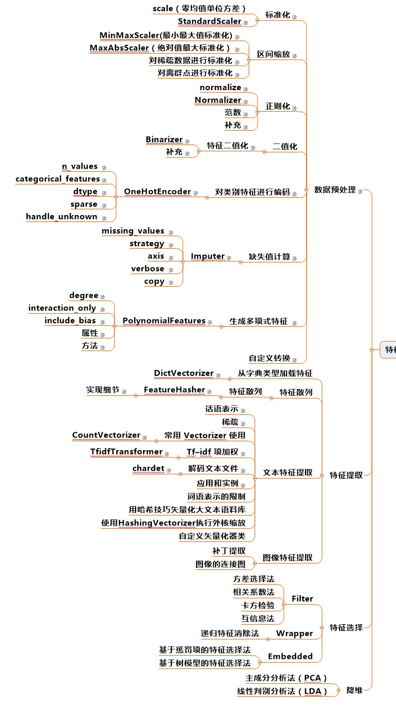

Algorithm when DataMining
Table of Contents
- 1. DONE 数据预处理
- 2. DONE 特征预处理(特征工程)
- 3. DONE 模型选择
[3/3] - 4. DONE 基于树的算法
[2/2] - 5. DONE KNN相关算法
[2/2] - 6. DONE Logistic
[3/3] - 7. DONE 基于贝叶斯的算法
- 8. DONE EM算法
- 9. DONE 集成学习
- 10. DONE HMM、条件随机场、混合高斯
- 11. TODO 支持向量机
[4/6] - 12. DONE 文本挖掘
- 13. DONE 聚类算法
[3/3] - 14. DONE 数值优化专题
- 15. TODO 调参专题
- 16. 神经网络与深度学习
- 17. 工具
- 18. 推荐算法 / 推荐系统
- 19. 机器学习算法调试
- 20. 数据库
1 DONE 数据预处理
- State "DONE" from "TODO"
- State "TODO" from ""
这里主要是拿到机器学习比赛数据后的处理方式

1.1 认识数据
- 观察特征的分布情况（是否正态、是否偏锋、是否厚尾、是否非平衡）
- 观察特征之间的关系
- 脱敏数据：相关系数矩阵，热力图等
- 非脱敏数据：通过变量名称推断其关系，并且进行验证
注意：所有数据预处理的参数均是由训练数据得到，在交叉验证中切记切记
处理方式：通过管道，得到一个完整的分类器（输入+输出），将其带入交叉验证函数中
1.2 变量类型判断
在一开始即可完成
- 连续变量
- 二分类变量
- 多分类变量
- 名义变量
- 有序变量
def get_type(arr): """ 获取变量类型数组，包括了binary， multi_class，continuous :param arr: np.ndarray :return: list[LabelType] """ if len(arr.shape) == 2: res = [] for feature in arr.T: count = np.unique([i for i in feature if not np.isnan(i)]) is_continuous = False for i in count: # 当存在浮点型，且小数点后有数字时，是连续值 if int(i) != i: is_continuous = True if np.max(feature) - np.min(feature) > 10: is_continuous = True if len(count) == 2: res.append(LabelType.binary) elif is_continuous: res.append(LabelType.continuous) else: res.append(LabelType.multi_class) return res elif len(arr.shape) == 1: count = np.unique([i for i in arr if not np.isnan(i)]) is_continuous = False for i in count: # 当存在浮点型，且小数点后有数字时，是连续值 if int(i) != i: is_continuous = True break if np.max(arr) - np.min(arr) > 10: is_continuous = True if len(count) == 2 or len(count) == 1: return LabelType.binary elif is_continuous: return LabelType.continuous else: return LabelType.multi_class
1.3 异常值、错误值处理
在一开始即可完成
异常值一般只针对连续数据
- 通过分布图的方式发现异常值
- 分情况处理：
- 如果分布存在较明显的双峰异常，则添加虚拟变量，作为新的特征
- 如果只是个别的特大或特小值，则用winsorize变换进行处理或者直接剔除
1.4 缺失值处理
每次交叉验证都需要进行
ref:
1.4.1 缺失机制
- 随机缺失(MAR) ： 缺失的可能性与其他完全变量（不含缺失值的变量）有关，比如后续的调查只针对IQ大于100的人，缺失与IQ有关，则是随机缺失
- 完全随机缺失(MCAR)：缺失不依赖于任何不完全变量或完全变量，比如资料遗失、机器损坏等
- 非随机缺失(MANR)：数据的缺失依赖于不完全变量自身，比如收入较低的人不愿意填写收入栏
数据是否是完全随机缺失可以采用单变量t检验和Little (1988)提出的多元t检验
研究者推荐使用包含辅助变量（Auxiliary Variables，与缺失值相关的因素）的方法减少估计偏差并提高满足MAR假设的可能
1.4.2 脱敏与非脱敏数据
- 如果是脱敏数据，则所有缺失情况均可作为随机缺失或完全随机缺失处理
- 如果是非脱敏数据，则需要通过变量名称进行推断
1.4.3 不同机制的处理方法
无论什么情况，缺失数据过多时均可考虑舍弃该特征
1.4.3.1 MAR, MCAR:
- 行删除：
你可以删除包含空值的对象用完整的数据集来进行训练，但预测时你却不能忽略包含空值的对象 - 均值、中位数、众数填补
- 模型补全
- 回归：连续数据、相对均值更好，缺点：线性，共线性
- KNN：针对离散数据，缺点：大数据集下效率低
- EM算法：对似然函数进行EM估计，缺点：收敛慢，复杂
- 多重填补：
- 独热编码，将缺失值看成虚拟变量，对离散数据有效，对连续数据建议先离散化后再做
- 不处理
- C4.5 将特征A上的缺失样本同时划入子节点中，同时根据子节点的标签类别比例调整样本权重：https://blog.csdn.net/u012328159/article/details/79413610
- GBDT(XGBoost)：xgboost把缺失值当做稀疏矩阵来对待，本身的在节点分裂时不考虑的缺失值的数值。缺失值数据会被分到左子树和右子树分别计算损失，选择较优的那一个。如果训练中没有数据缺失，预测时出现了数据缺失，那么默认被分类到右子树
- 贝叶斯(网络)：？https://datascience.stackexchange.com/questions/3711/how-does-the-naive-bayes-classifier-handle-missing-data-in-training?utm_medium=organic&utm_source=google_rich_qa&utm_campaign=google_rich_qa
- 人工神经网络：？
1.4.3.2 MANR
由于缺失情况和该变量本身有关，因此直接将其转为虚拟变量即可：
- 针对离散变量：“男”、“女”、nan， 通过两个虚拟变量进行替换
- 针对连续变量：
- 值非常稀疏的变量：年净收入 0~100k、nan，先进行离散化，再转为虚拟变量
- 值不是非常稀疏的变量：年龄 20~50、nan，直接进行离散化
1.4.4 sklearn的方法
Imputer方法可以对数据进行插补，更重要的是， 它支持稀疏数据
from sklearn.preprossing import Imputer
1.5 新变量生成
在一开始完成即可
1.5.1 根据变量含义生成新变量
比如： 根据身份证号码生成性别、居住省份、居住城市、星座（玄学）等
需要基于对变量的理解
1.5.2 数据的特征构造新特征
- 缺失值特征
- 异常值特征
- 非众数特征
1.5.3 多项式特征
- 直接加入多项式特征，再通过特征选择筛选
- 适用于关键特征较少的情况
from sklearn.preprocessing import PolynomialFeatures poly = PolynomialFeatures(degree=10) poly.fit(X) X_poly = poly.transform(X)
1.6 连续特征标准化与区间缩放
每次交叉验证都需要进行
1.6.1 注意
- 线性模型需要用标准化的数据建模,而树类模型不需要标准化的数据
- 处理标准化的时候,注意将测试集的数据transform到test集上
1.6.2 标准化(standardization)
使不同度量的变量具有可比性，同时 不改变原始数据的分布
好处：
- 使具有可比性
- 不改变分布
注意
什么样的模型需要进行标准化：基于距离的（LR，Kmeans，SVM）
1.6.3 区间缩放
使各个特征维度对目标函数的影响权重是一致的，即使得那些扁平分布的数据伸缩变换成类圆形，但是 改变了数据的原始分布
好处：
- 提高迭代求解的速度
- 提高迭代求解的精度
1.6.3.1 Rescaling(归一化)
1.6.3.2 Mean normalization
1.6.3.3 Scaling to unit length
1.6.4 特殊情况：稀疏点的区间缩放
常规的Scale容易破坏数据的稀疏性结构，而MaxAbsScaler不会shift or center the data，因此不会改变稀疏结构
import sklearn.preprossing.MaxAbsScaler
1.6.5 特殊情况：离群点的区间缩放
import sklearn.preprocessing.RobustScaler
通过分位数进行区间缩放，因此更加稳健
1.7 离散特征 独热编码
在一开始完成即可
注意：如果某虚拟变量在测试集中存在而训练集中不存在，怎么办？
1.7.1 方法一
- 如果在train中存在而test中不存在： 为test中添加0列
# Get missing columns in the training test missing_cols = set( train.columns ) - set( test.columns ) # Add a missing column in test set with default value equal to 0 for c in missing_cols: test[c] = 0 # Ensure the order of column in the test set is in the same order than in train set test = test[train.columns]
- 如果在test中存在而在train中不存在：剔除test中的对应列
# Get missing columns in the training test missing_cols = set( test.columns ) - set( train.columns ) # Add a missing column in test set with default value equal to 0 for c in missing_cols: del test[c]
- 如果上述两种情况交杂，则各自去差集处理
1.7.2 方法二：
在独热编码时就同时加入训练集和测试集
import pandas as pd train_objs_num = len(train) dataset = pd.concat(objs=[train, test], axis=0) dataset_preprocessed = pd.get_dummies(dataset) train_preprocessed = dataset_preprocessed[:train_objs_num] test_preprocessed = dataset_preprocessed[train_objs_num:]
1.7.3 方法三(最好)
import pandas as pd train = pd.DataFrame(data = [['a', 123, 'ab'], ['b', 234, 'bc']], columns=['col1', 'col2', 'col3']) test = pd.DataFrame(data = [['c', 345, 'ab'], ['b', 456, 'ab']], columns=['col1', 'col2', 'col3']) train1 = pd.get_dummies(train) test1 = pd.get_dummies(test) # 生成列名一致的两张表，外连接，缺失值用0填充 new_train, new_test = train1.align(test1,join='outer', axis=1, fill_value=0)
1.8 数据不平衡方法
1.8.1 简介
1.8.1.1 什么是数据不平衡问题(imbalance dataset)
样本标签，或者说是预测目标，取值不平衡，比如为0的非常多，为1的非常少，导致分类器容易将所有样本均预测为0，带来的准确率却很高
1.8.1.2 为什么类不平衡是不好的
- 从模型的训练过程来看：少量样本提供的信息过少，是的训练容易受误差干扰
- 从模型的预测过程来看： 当预测几率大于观测几率时 ，样本被判为正类，比如先验的观测几率是0.5，而少量样本容易扭曲观测几率
1.8.1.3 什么样的模型需要处理非平衡数据:
- 基于贝叶斯的模型无需处理
- 基于树的模型一定要处理
- 不包含样本先验的模型(logistic, knn)要处理
1.8.2 文献与方法综述
1.8.3 抽样方法
1.8.3.1 Under Sampling (欠采样法、向下采样法)，减少多数类样本
- Edited Nearest Neighbor (ENN)
对每个多数类的样本， 如果他的大部分K近邻样本是少数类，那么将该点删去
- Repeated Edited Nearest Neighbor
重复ENN直至样本不发生改变
- Tomek Link Removal
REF : "Two Modifications of CNN", 1976 如果样本点A和样本点B的最近邻（即K=1近邻）都是对方，且A与B分别属于少数类与多数类，则将该点删去
- Ensemble 模型融合法
REF : "Exploratory undersampling for class-imbalance learning", 2009
思想 : 多次下采样（放回采样，这样产生的训练集才相互独立）产生多个不同的训练集，进而训练多个不同的分类器，通过组合多个分类器的结果得到最终的结果
- BalanceCascade 增强训练法
REF : "Exploratory undersampling for class-imbalance learning", 2009
思想 : 先通过一次下采样产生训练集，训练一个分类器，对于那些分类正确的大众样本不放回，然后对这个更小的大众样本下采样产生训练集，训练第二个分类器，以此类推，最终组合所有分类器的结果得到最终结果
1.8.4 合成方法
1.8.4.1 SMOTE (Synthetic Minority Oversampling TEchnique)
REF :
- "DATA MINING FOR IMBALANCED DATASETS:AN OVERVIEW"
- "SMOTE: Synthetic Minority Over-sampling Technique", 2002
步骤 ：
- 对于少数类样本集{xi, i=1,…,n}，找到每个xi的K个同为少数类的近邻样本点
- 对每个xi，随机抽取K个近邻点中的一个，记为xi(k)
- 生成新的样本点 xi,1 = xi + η1 · (xi(k) - xi)，其中η1位0-1之间的随机数
- 将步骤3执行N次，最终得到N倍于原少数类样本的点
改进 ： 该方法的缺点是，增加了类之间重叠的可能性，并且有可能生成一些无意义的样本，因此有如下改进方法
- Borderline-SMOTE
- ADASYN
1.8.4.2 Borderline-SMOTE
主要思想 ：
- 如果少数类样本点附近全是多数类的点，那么改点很明显为噪声，不做处理或者是剔除
- 如果少数类样本点附近有较多的多数类样本，那么说明该样本刚好处于分类的边界，具有较大的信息。
- 如果少数类样本点附近有较少的多数类样本点，那么该样本点很安全，如果强行合成新样本点，则会模糊分类的边界，因此不做处理
实际操作中，如果K/2以上的K近邻点都为多数类，那么就进行合成，否则不合成
1.8.4.3 SMOTE + ENN
REF : "A study of the behavior of several methods for balancing machine learning training data" Batista et al 2004
1.8.4.4 SMOTE + Tomek
REF : "A study of the behavior of several methods for balancing machine learning training data" Batista et al 2004
1.8.4.5 SMOTEBoost
REF : "SMOTEBoost: Improving Prediction of the Minority Class in Boosting", 2003
结合了SMOTE和AdaBoost算法，不断更新样本的分布
1.8.5 加权方法
给与不同错误损失不同的权重，视情况而定
1.8.6 一分类方法
当正负样本相差特别悬殊时，把他看成一分类或者是异常检测问题，此时重点不在于捕捉类间的差别，而是为其中一类进行建模，经典的工作包括One-class SVM等。
1.8.7 方法选择
来自博客：http://blog.csdn.net/lujiandong1/article/details/52658675
- 在正负样本都非常之少的情况下，应该采用数据合成的方式；
- 在负样本足够多，正样本非常之少且比例及其悬殊的情况下，应该考虑一分类方法；
- 在正负样本都足够多且比例不是特别悬殊的情况下，应该考虑采样或者加权的方法。
- 采样和加权在数学上是等价的，但实际应用中效果却有差别。尤其是采样了诸如Random Forest等分类方法，训练过程会对训练集进行随机采样。在这种情况下，如果计算资源允许上采样往往要比加权好一些。
- 另外，虽然上采样和下采样都可以使数据集变得平衡，并且在数据足够多的情况下等价，但两者也是有区别的。实际应用中，我的经验是如果计算资源足够且小众类样本足够多的情况下使用上采样，否则使用下采样，因为上采样会增加训练集的大小进而增加训练时间，同时小的训练集非常容易产生过拟合。
- 对于下采样，如果计算资源相对较多且有良好的并行环境，应该选择Ensemble方法。
1.8.8 实现
python imbalance-learn 包
1.9 管道pipline
1.9.1 FunctionTransformer自定义一个转化器,并且可以在Pipeline中使用
import numpy as np from sklearn.preprocessing import FunctionTransformer transformer = FunctionTransformer(np.log1p)#括号内的就是自定义函数 X = np.array([[0, 1], [2, 3]]) transformer.transform(X)
1.9.2 运行流程
from sklearn.pipeline import Pipeline pipe_lr = Pipeline([('sc', StandardScaler()), ('pca', PCA(n_components=2)), ('clf', LogisticRegression(random_state=1)) ]) pipe_lr.fit(X_train, y_train) print('Test accuracy: %.3f' % pipe_lr.score(X_test, y_test))
之前的每一个管道方法必须继承 fit 和 transform 的属性，最后一层方法继承 fit score predict
2 DONE 特征预处理(特征工程)
2.1 DONE 特征选择
在一开始完成
2.1.1 Filter
自变量和目标变量之间的关联
使用前提
- 自变量只有两种情况：连续 或 0-1
- 因变量有三种情况：连续 0-1 或 多分类
注意
Filter方法通常需要给定 K(需要的特征数目)
2.1.1.1 方差法
适用于：
- 任何自变量
- 任何因变量
思路：
变量方差越大则反应的信息越大
2.1.1.2 相关系数
适用于：
- 任何自变量
- 连续或 0-1 因变量
思想：
如果特征和标签相关性较大，则认为特征更有效
不同情况的计算方法
| 特征 | 标签 | 方法 |
|---|---|---|
| 连续 | 连续 | pearson相关系数、spearman秩相关系数、Kendall相关系数 |
| 连续 | 离散 | 离散转为二值，计算相关系数，如果是多值，则计算多个相关系数取平均 |
| 离散 | 连续 | 同上 |
| 离散 | 离散 | jarcard距离 |
2.1.1.3 卡方检验
适用:
- 分类变量
- 0-1或多分类因变量
卡方检验被用来:
- 检验连续变量的分布是否与某种理论分布相一致
- 检验某个分类变量各类出现的概率是否等于指定概率
检验两个分类变量是否两两独立
做法:
- 原始数据中得到实际值
- 根据实际值,假设两变量独立,计算得到理论值
- 卡方检验
例:
| 抽烟 | 不抽烟 | |
| 肺癌 | 10 | 20 |
| 未肺癌 | 90 | 80 |
以上是实际数据中得到的数据,那么理论数据则是假设抽烟和肺癌独立,求出每一个类别下的联合概率,再乘以总人数N=200,得到期望数E
P(抽烟,肺癌) = P(抽烟) * P(肺癌) = (10 + 90)*(10+20) / 2002 E(抽烟,肺癌) = P(抽烟,肺癌) * 200
最后带入公式,
\begin{eqnarray} \nonumber \chi ^2 = \sum \frac{(N(.,.) - E(.,.))^2}{E(.,.)} \end{eqnarray}进行卡方检验,自由度为 (列数-1)*(行数-1)
2.1.1.4 互信息
- 任何自变量
- 任何因变量（最大信息系数法用以处理定量数据）
- 信息熵
代表了一个分布的信息量,或者编码的平均长度
\begin{eqnarray} \nonumber H(p) = \sum_x p(x) log_2 \frac{1}{p(x)} = -\sum_x p(x) log_2 p(x) \in \ [0, log_2 \frac{1}{n}] \end{eqnarray}其中n为类别数目,
信息熵越大,信息越混乱,越无序- log2 比特
- log10 哈特
- loge 奈特
如何转化: 换底公式 \(log_a b = \frac{log_c b}{log_c a}\)
- 交叉熵
用一个猜测的分布编码方式去编码一个真实的分布,可以用来判断分布的差异
\begin{eqnarray} \nonumber H_p(q) = \sum_x q(x) log \frac{1}{p(x)} \end{eqnarray}交叉熵损失与机器学习Logistic回归的损失函数即为 交叉熵损失,优点:是凸的 - KL散度
衡量两个分布之间的距离
\begin{eqnarray} \nonumber D_q(p) = H_q(p) - H(p) = \sum_x q(x) log_2 (\frac{q(x)}{p(x)}) \end{eqnarray}非负性证明: https://blog.csdn.net/haolexiao/article/details/70142571 - 联合熵
\begin{eqnarray} \nonumber H(X, Y) = \sum_{x,y} p(x,y) log_2 \frac{1}{p(x, y)} \end{eqnarray} - 条件熵
\begin{eqnarray} \nonumber \end{eqnarray} \begin{eqnarray} \nonumber H(X|Y) = \sum_{y} p(y) \sum_{x} p(x|y) log_2 \frac{1}{p(x| y)} = \sum_{x, y} p(x, y) log_2 \frac{1}{p(x|y)} \end{eqnarray}
\begin{eqnarray} \nonumber H(Y|X) = H(X, Y) - H(X) \end{eqnarray}联合熵和条件熵的关系当已知X时, Y的不确定性减少了,H(X,Y)剩余的信息量就是条件熵:如果X和Y独立,则:
\begin{eqnarray} \nonumber H(Y|X) = H(Y) = H(X, Y) - H(X) \end{eqnarray} - 互信息(信息增益)
互信息就是一个联合分布中的两个信息的纠缠程度/或者叫相互影响那部分的信息量
\begin{eqnarray} \nonumber I(X, Y) = H(X) + H(Y) - H(X, Y) = H(Y) - H(Y|X) \end{eqnarray}- 如果X,Y独立,则互信息为0
- 互信息越大说明两者关系越强
非负性证明见:https://blog.csdn.net/haolexiao/article/details/70142571
2.1.2 Wrapper
通过目标函数来决定是否加入一个变量
无需给定K(需要的特征数目)
不断地迭代，产生特征子集，评价：
- 完全搜索
- 随机搜索（模拟退火、粒子群、遗传算法）
- 启发式搜索
- 爬山法: 不断的添加能使效果变好的特征,直到不能更好为止 (前向贪心算法)
- 后向贪心算法:不断减少特征直至最好
- 逐步回归法:前后向均有
2.1.3 Embedded
2.1.3.1 基于正则项的特征选择
为什么正则项(Regularization)可以防止过拟合？
ref: http://blog.csdn.net/jackie_zhu/article/details/52134592 ref: https://www.zhihu.com/question/20700829
模型过拟合的原因往往是模型过于复杂，拟合了不需要的参数
简单的说，正则项通过损失函数中的惩罚项，对参数施加限制，使其对噪声和异常值敏感程度较小
- L1正则
- L2正则
这里的 lambda 越大，表示对 w 的限制越强， w越接近0，（对应图中的区域越小） 模型复杂度越低，越不容易过拟合，模型方差越小
过拟合：高方差
欠拟合：高偏差
概率论角度解释
比如L2正则，相当于施加了一个0均值，α-1 为方差的正态分布约束，将其加入到极大似然里去，求对数，去掉常数项，即是后面的形式
- 当 α=0 时，即高斯分布方差趋向于无穷大，为无信息先验，即没有加上约束
- 当 α 增大时，表明先验的方差越小，模型越稳定，相对的variance越小，越不容易过拟合
为什么L1正则可做特征选择？
- 图形角度
- 概率论角度
- L1加入了拉普拉斯先验，尖峰，在0处概率非常高
- L2加入了高斯先验，钟形，在0处概率和0附近概率差不多
2.1.3.2 基于树的特征选择
以GBDT为例，特征j的全局重要程度通过特征j在单颗树中的重要程度平均值来衡量
\begin{eqnarray} \nonumber J_j^2 (T) = \sum_{t=1}^{L-1} i_t^2 1(v_t =j) \end{eqnarray}其中T为第T颗树，L为叶子节点数目，对于一颗满二叉树，非叶子节点数目等于L-1，1(vt = j)表示如果该非叶子节点的分裂特征是j，那么就是1，否则为0；it2表示该节点安装j分裂后带来的平方损失的减少值。
除了GBDT，普通的决策树、随机森林都可以进行特征选择
2.2 降维
2.2.1 PCA 主成分分析和EVD分解
2.2.1.1 主成分分析要求
- 新维度特征之间相关性尽可能小
- 参数空间 \(\theta\) 有界
- 方差尽可能大,且每个主成分方差递减
2.2.1.2 特征值和特征向量
\(\lambda\) 和 \(\nu\) 是方阵A的特征值和特征向量,当且仅当:
\begin{eqnarray} \nonumber A \nu = \lambda \nu \end{eqnarray}从这个公式可以看出，特征值所对应的特征向量描绘了此变换的方向，而特征值描绘了此变换的大小，或者说此变换方向对整体方向的贡献值。特征分解满足：
\begin{eqnarray} \nonumber A = Q \Sigma Q^{-1} \end{eqnarray}其中A为方阵，Q为特征向量矩阵，每一列均为一个特征向量，Σ为特征值为对角元素的对角阵，与特征向量一一对应。特征值求法如下：
\begin{eqnarray} \nonumber |\lambda E -A | &=& 0 \\ \nonumber (\lambda E -A)\nu &=& E \end{eqnarray}2.2.1.3 特征分解(EVD)和主成分的关系
主成分分析事实上是一个等式约束优化问题:
\begin{eqnarray} \nonumber \max_{\lambda} {Var(\theta_1 X)}} \\ \nonumber s.t. \ \ \theta_1 \theta_1^T = 1 \end{eqnarray}其中约束表示了参数 θ 的有界性
利用拉格朗日乘子法,得到:
\begin{eqnarray} \nonumber \phi(\theta) = \theta_1 \Sigma \theta_1^T - \lambda (\theta_1 \theta_1^T - 1) \end{eqnarray}对 θ 求导可以得到 \(2(\Sigma - \lambda E) \theta_1 = 0\) 由于 θ 不等于0,因此转换为 \(|\Sigma - \lambda E| = 0\) 即特征值问题
2.2.2 SVD分解
ref:
2.2.2.1 正交向量和正交矩阵
正交向量即点积为0的两个向量
- 正交矩阵必须是方阵
- 正交矩阵的转置等于其逆矩阵
- 正交矩阵的行和列都是两两正交的向量
- 正交矩阵对应的变换是正交变换
- 两种表现: 旋转和反射
2.2.2.2 SVD介绍
EVD分解将方阵的一组正交基映射到了另一组正交基,而对于任意矩阵,同样也是可以的,这就是SVD分解
定义:
\begin{eqnarray} \nonumber A_{m \times n} = U_{m \times m} \Sigma_{m \times n} V^T_{n \times n} \end{eqnarray}其中 U 和 V 都是正交矩阵
如何计算:
- 对 \(A^T A\) 求n个特征值对应的特征向量, 张成一个 n x n 的矩阵,就是我们的 \(V\) (右奇异矩阵)
- 对 \(AA^T\) 求 m个特征值对应的特征向量, 张成一个 m x m的矩阵,就是我们的 \(U\) (左奇异矩阵)
我们注意到:
\begin{eqnarray} \nonumber A = U \Sigma V^T \Rightarrow AV = U \Sigma V^T V \Rightarrow A v_i = \sigma_i u_i \Rightarrow \sigma_i = \frac{A v_i}{u_i} \end{eqnarray}其中, \(v_i, u_i\) 分别是 V 和 U 的第i个特征向量(第i列), vi维度为 n x 1, ui的 维度为 m x 1
特征值等于奇异值矩阵的平方 证明见 ref 2.
2.2.2.3 SVD性质
可以用最大的k个奇异值描述整个向量(类似EVD分解)
因此可以用来降维, 数据压缩和去噪, 推荐算法
优点:
- 可并行
- 原理简单
- 可针对任意矩阵
缺点:
- 分解矩阵解释性不强,类似黑盒子
2.2.3 线性判别分析
ref: https://blog.csdn.net/daunxx/article/details/51881956
根据假设的条件分布P(x|y)寻找决策面，我们知道：
\begin{eqnarray} \nonumber P(y=i|x) = \frac{f(x|y=i) \pi_{y=i}}{\sum_j f(x|y=j) \pi_{y=j}} \end{eqnarray}分类器的差异表现在 f(x|y=i)的分布函数假定不同
上述公式只针对生成式模型
2.2.3.1 LDA
又叫Fisher判别，其假设f(x|y=i)为均值不同，方差相同的正态分布，可以用来降维
是一个： 有监督的降维或是分类方法
有监督学习
目的:
使得降维后的点尽可能的容易被区分, 但是不保证投影后正交
实现方法：
- 通过瑞利熵
- 最大化类间距
- 最小化类内聚
2.2.3.2 GDA
高斯判别分析GDA是LDA的核变换后的版本
2.2.3.3 二次判别分析QDA
假设f(x|y=i)服从均值不同，方差也不同的正态分布
2.2.4 LASSO
见 Logistic 章节
2.2.5 小波分析
2.2.6 深度学习SparseAutoEncoder
用少于输入层神经元数量的隐含层神经元去学习表征输入层的特征，相当于把输入层的特征压缩了，所以是特征降维。
2.2.7 拉普拉斯映射(流形学习)
ref:
拉普拉斯映射就是直接在低维下找到样本，使得所有样本保持原来的相似度。
2.2.8 低维线性嵌入(流形学习)
假设数据中每个点可以由其近邻的几个点重构出来。降到低维，使样本仍能保持原来的重构关系，且重构系数也一样。
3 DONE 模型选择[3/3]
- State "DONE" from "TODO"
- State "TODO" from "TODO"
- State "TODO" from "TODO"
- State "TODO" from "TODO"
- State "TODO" from "TODO"
- State "TODO" from "TODO"
- State "TODO" from "TODO"
3.1 DONE 模型评价[4/4]
3.1.1 DONE 二分类模型
- accuracy
- precision
- recall
- f1
- aucroc
- 只在输出为概率时有用，如logistic回归
- auc 位roc曲线的下面积，其物理意义为任取一对正负样本对，正样本的score大于负样本的概率
- 计算:
- 给定(score, label)元组, 包括M个正样本和N个负样本,
- 我们先将score排序, 找到最大得分的正样本的序号(rank1), 那么得分比他小的正样本数目为 M-1,比分比他小的负样本数目为 (rand1 - 1) - (M-1)
- 再找到第二大得分的正样本序号(rank2) , 得分比他小的正样本数目为 M-2, 得分比他小的负样本数目为 (rank2 - 1) - (M-2)
我们要计算一对样本正的得分大于负的的概率,因此需要将所有得分比正样本小的负样本数目相加,除以正负配对总数,即
\begin{eqnarray} \nonumber AUC = \frac{\sum_i^M (rand\_i - 1 - (M-i))}{MN} = \frac{\sum_i^M rand\_i - M(M+1)/2}{MN} \end{eqnarray}
3.1.2 DONE 多分类模型
- f1micro
- f1macro
- f1weight
3.1.3 DONE 回归模型
- explainedvariance
- absoluteerror
- squarederror
- RMSE(root mean squared error)
- RMSLE(root mean squared log error, in case of the abnormal value)
- r2
- medianabsoluteerror
3.1.4 CANCELED 聚类模型
了解即可
- 互信息
- rand系数
- 轮廓系数
3.2 DONE 交叉验证
- 留出法：选出两个互斥子集分别作为训练集和测试集
- K折交叉：分成K个互斥子集，对每一个子集作为测试集，其他的作为训练集，进行K次检验（K=样本数时，为留一法）
- 自助法：
从训练集D中有放回的抽样，得到D'，如果抽的次数足够多，则始终没被抽到的概率将近三分之一：
\begin{eqnarray} \nonumber \lim_{m\rightarrow \infty} ( 1- \frac{1}{m}) ^ m \rightarrow \frac{1}{e} = 0.368 \end{eqnarray}注意：该公式在随机森林抽取变量时也同样用掉了，证明三分之一这个概率
此时将D'作为训练集，D/D'(没被抽到的)作为测试集，进行验证。
自助法在数据集较小，难以有效划分训练集和测试集时非常有用 ，但是由于改变了初始数据的分布，因此会引入估计偏差，所以前两种用的比较多一点
对于包含时序的数据，必须使用之前的数据进行交叉验证，来预测之后的数据
3.3 CANCELED 网格搜索
3.4 如何检验过拟合
https://www.cnblogs.com/yan2015/p/5052393.html 学习曲线，通过做出随样本变化与训练集、测试集的误差变化曲线，观察方差与偏差是否偏大
- 如果纵坐标是Error,则下方为训练集,上方为测试集
- 如果纵坐标是效果指标,则上方是训练集,下方是测试集
理论 样本量增加必然减少过拟合问题,而过拟合减少的速度决定了模型的好坏
解决方法
- 增加样本
- 降低模型复杂度
- 正则项
- dropout层(神经网络)
- 松弛变量(SVM)
- 剪枝(决策树)
- 增加K值(KNN)
4 DONE 基于树的算法[2/2]
- State "DONE" from "TODO"
- State "TODO" from "TODO"
- State "TODO" from ""
4.1 DONE 决策树
- State "TODO" from ""

4.1.1 分类树
- ID3
- 划分依据：最大信息熵增益
- 多叉树
- 只针对分类变量
- C4.5
- 划分依据：信息增益比率（使用分裂信息来惩罚取值较多的Feature，防止取值较多的feature由于其信息增益较大而被优先选中）
- 多叉树
- 分类变量或连续变量
- CART
- 根据基尼系数划分
- 二叉树
- 分类变量或连续变量
损失函数
其中|T|为所有叶节点数目，Nt表示叶节点中样本数，Ht为该叶节点的信息熵，Ntk表示叶节点中的类别k，alpha为惩罚项参数
前半部分表示了模型整体的效果，后半部分表示了惩罚项，叶节点越多越复杂
4.1.2 回归树
回归树本质上与分类树类似，只不过每一个分支节点和叶节点，都会得到一个因变量的预测值，并通过该预测值得到估计的均方误差，用来判断分类的结果，作为划分依据
4.1.3 TODO 剪枝
- State "TODO" from ""
- 前剪枝（设置参数）
- 后剪枝：
- 误差降低剪枝，原始根节点和去掉一个节点后根节点在测试集上的误判数量对比，如果去掉后误判减少了，则实现剪枝(需要测试集)
- 悲观剪枝，不需要测试集，二项分布渐进正态，连续修正因子，均值、方差为np、np(1-p)，当子树错误率大于等于叶子节点的错误率+一个标准差后，进行剪枝
4.2 DONE 随机森林
4.2.1 概述
什么是随机森林：
- 森林：根据集成学习(Ensemble Learning)的思想，通过多个决策树进行分类，最终结果由多个决策树结果投票得到
- 随机：决策树的训练样本是从原始训练集中随机得到的：
- 原始训练集的总样本数为N，而每棵树的随机训练集的样本数也为N，但是是从原始样本中有放回抽N次得到的(bootstrap)
- 原始训练集的总特征数为M，而每棵树的随机训练集的特征数为m(m<=M)，从原始样本的M个特征中随机无放回的抽取，m为随机森林唯一的超参数
为什么抽取样本时是有放回的 如果不是有放回抽样，则每颗树的训练样本都是一样的（如果抽N个）、或者是高度相关的（如果抽n(n<N)个样本，此时至少有(2*n-N)个样本是一样的）
袋外误差
数据中总有1/3的样本未抽到，这个是袋外数据(out of bag, oob)，用训练好的模型估算袋外数据的误差，可以证明该误差是测试数据的无偏估计。
随机森林的错误率和两个因素有关：
- 两颗树样本的相关性越大，错误率越大
- 每个树的分类能力越强，整个森林的错误率越小
参数m的增加将导致树之间的相关性和树的分类能力同时增加，而m的减小也会导致两者同时减小，因此 如何确定m非常关键
4.2.2 优缺点
4.2.2.1 优点
- 在当前所有算法中，具有极好的准确率
- 能够有效地运行在大数据集上
- 能够处理具有高维特征的输入样本，而且不需要降维
- 能够评估各个特征在分类问题上的重要性
- 在生成过程中，能够获取到内部生成误差的一种无偏估计
- 对于缺省值问题也能够获得很好得结果
- 需要调的参数非常少
- 几乎不会有过拟合的问题，因为它相当于已经在内部进行了交叉验证（Breiman，2001），然而这点尚有争议（Elith and
Graham，2009）。
- 不需要顾忌多重共线性
4.2.2.2 缺点
- 对于回归问题表现不好，无法给出连续的预测，并且只能在训练集因变量的范围内进行预测
- 对于许多统计建模者来说，随机森林给人的感觉像是一个
黑盒子 - 对于非平衡数据集效果不好，倾向于类别较多的值
4.2.2.3 为什么随机森林不存在过拟合问题
- 随机的样本和随机的特征使得模型不易陷入过拟合，具有较强的抗噪能力
- 无需通过交叉验证对其误差进行估计，它可以在内部进行评估，通过oob估计得到误差的无偏估计：
- 对每个样本，计算它作为oob样本的树对它的分类情况（约1/3的树）；
- 然后以简单多数投票作为该样本的分类结果；
3) 最后用误分个数占样本总数的比率作为随机森林的oob误分率。
oob误分率是随机森林泛化误差的一个无偏估计，它的结果近似于需要大量计算的k折交叉验证。
4.2.3 实现
5 DONE KNN相关算法[2/2]
- State "DONE" from "TODO"
- State "TODO" from "TODO"
- State "TODO" from "TODO"
- State "TODO" from ""
5.1 DONE KNN
5.1.1 模型
简述： 根据离待分类点距离最近的K个点的label，确定待分类点的label。
注意： knn当样本量越大时效果越好，但是带来计算量的上升
5.1.1.1 三要素
- 训练集
- 距离度量
- K值
当三要素确定后，分类结果可以唯一确定。
5.1.1.2 距离度量
- 明可夫斯基距离 \(\sqrt[p]{\sum_{l=1}^n |x_i^{(l)} - x_j^{(l)}|^p}\) (p范数)
- 欧式距离 p = 2
- 曼哈顿距离 p = 1
- 最大值距离, p = inf, \(\max_{l} |x_i^{(l)} - x_j^{(l)}|\)
- 最小值距离，p = -inf, \(\min_{l} |x_i^{(l)} - x_j^{(l)}|\)
5.1.1.3 K值的选择
- K值较小：
- 学习的近似误差(approximation error)减小，只有相近的点才会起到作用
- 学习的估计误差(estimation error)增大，对近邻的点过于敏感，容易过拟合
- K值增大：
- 与上面刚好相反，意味着模型变简单，容易欠拟合
在实际应用中，K一般取一个较小的值，然后通过交叉验证法来取最佳K值
5.1.2 分类的规则
KNN算法中的分类决策规则往往是多数表决
多数表决等价于经验风险最小化 《统计学习方法》(P40)
5.1.3 代码实现
5.2 DONE KD树
- 用原始数据生成一颗平衡二叉树，对数据进行保存于索引
- 维度越接近样本数时，效率越低，越接近于KNN
- 找最近邻需要通过二叉搜索和 回溯 算法
- 从root节点开始，DFS搜索直到叶子节点，同时在stack中顺序存储已经访问的节点。
- 如果搜索到叶子节点，当前的叶子节点被设为最近邻节点。
- 然后通过stack回溯:
- 如果当前点的距离比最近邻点距离近，更新最近邻节点.
- 然后检查以最近距离为半径的圆是否和父节点的超平面相交.
- 如果相交，则必须到父节点的另外一侧，用同样的DFS搜索法，开始检查最近邻节点。
- 如果不相交，则继续往上回溯，而父节点的另一侧子节点都被淘汰，不再考虑的范围中.
- 当搜索回到root节点时，搜索完成，得到最近邻节点。
- 算法复杂度分析：
| Algorithm | Average | Worst |
|---|---|---|
| Space | O(n) | O(n) |
| Search | O(logn) | O(n) |
| Insert | O(logn) | O(n) |
| Delete | O(logn) | O(n) |
- 当考虑K近邻时，可以维护一个近邻的优先队列（见wikiKDTree)
6 DONE Logistic[3/3]
- State "DONE" from "TODO"
- State "TODO" from "DONE"
- State "DONE" from "DONE"
- State "DONE" from ""
6.1 DONE 理论
6.1.1 sigmoid函数
将(-inf, inf)定义域映射到(0,1)值域，与之类似的还有tan函数。
为什么选择sigmoid函数:
logistic回归由指数族分布推出
指数族分布:
\begin{eqnarray} \nonumber p(y;\eta) = b(y) exp(\eta^T T(y) - a(\eta)) \end{eqnarray}而logistic回归服从伯努利分布:
\begin{eqnarray} \nonumber p(y;p) = p^y (1-p)^{(1-y)} = exp(y \ln{p} + (1-y)\ln{(1-p)}) = exp(y \ln{\frac{p}{1-p}} + \ln{(1-p)}) \end{eqnarray}其中 \(\eta = \ln{\frac{p}{1-p}}\) 可以推出 \(p = \frac{1}{1 + e^{-\eta}}\) ,而根据指数族分布的假设:
- 已知a, b, T(.)时, \(\eta\) 可以确定一个指数族分布
- \(eta\) 是线性于 X ,即 \(eta = w^T x\)
所以得到sigmoid函数: \(f(x) = p = \frac{1}{1 + e^{-w^T x}}\)
sigmoid的重要性质：
\[ f'(x) = f(x)(1-f(x)) \]
对于logfistic回归模型，考虑 \(x=(1, x_1, x_2,...,x_n)\) ，设条件概率 \(P(y=1|x)=p\) ，则logistic回归模型为：
\begin{eqnarray} \nonumber P(y=1|x) = \frac{1}{1+e^{-g(x)}} \end{eqnarray}其中：
\begin{eqnarray} \nonumber g(x) = w^T x \end{eqnarray}那么相反，在x条件下不发生的概率为 \[ P(y=0|x)=1-p=1-P(y=1|x) \] ，所以，
\begin{eqnarray} \nonumber P(y=0|x) = 1 - \frac{1}{1+e^{-g(x)}} = \frac{1}{1+e^{g(x)}} \end{eqnarray}所以事件发生于不发生的概率比为：
\begin{eqnarray} \nonumber \frac{P(y=1|x)}{P(y=0|x)} = e^{g(x)} \end{eqnarray}两边取对数得到：
\begin{eqnarray} \nonumber log(\frac{p}{1-p}) = g(x) = w^T x \end{eqnarray}6.1.2 估计方法
首先当然我们想到的是最小二乘估计，模仿线性回归，令残差平方和作为损失函数：
6.1.2.1 最小二乘估计
损失函数为：
\begin{eqnarray} \nonumber j(w) = \sum_i \frac{1}{2} (\phi(g(x_i)) - y_i)^2 \end{eqnarray}其中 \(\phi()\) 为sigmoid函数， 此时发现损失函数非凸，导致存在较多的局部最小值，难以求解
6.1.2.2 极大似然估计
将上文中的 \(P(y=i|x), i \in {0,1}\) 写成一般形式：
\begin{eqnarray} \nonumber P(y|x,w) = \phi(g(x))^y (1 - \phi(g(x)))^{(1-y)} \end{eqnarray}对于每一个样本，极大似然估计假设其独立同分布，则将每个样本概率相乘，可得其联合概率（似然值），为了方便计算，我们对似然值取对数，同时另z = g(x)：
\begin{eqnarray} \nonumber log(L(w)) = \sum_{i=1}^n (y^{(i)} ln(\phi(z^{(i)})) + (1-y^{(i)})(1 - ln(\phi(z^{(i)}))) \end{eqnarray}此时要取似然函数的最大值，而为了与损失函数对应，因此我们在左右两侧加上负号，得到损失函数：
\[ J(w) = -log(L(w)) \]
注意，这里就是为什么logistic回归要用对数损失而不是平方损失
此时损失函数见下图，如果样本值为1，则sigmoid函数值越接近1，损失越小
6.1.3 求解
6.1.3.1 梯度下降 （gradient descent）
梯度方向即函数变化最快的方向，沿着梯度方向寻找更容易找到函数的最大值，而沿着梯度想法的方向寻找更容易找到最小值
sigmoid函数有着如下优良的性质，因此求导非常容易
\begin{eqnarray} \phi ' (z) = \phi (z) (1 - \phi(z)) \end{eqnarray}对于梯度下降，我们需要求损失函数在参数向量一个分量上的偏导数，用以更新参数向量：
\begin{eqnarray} \frac{\partial J(w)}{\partial w_j} = - \sum_{i=1}^n (y^{(i)} \frac{1}{\phi(z^{(i)})} - (1 - y^{(i)}) \frac{1}{1 - \phi(z^{(i)})}) \frac{\partial \phi(z^{(i)})} {w_i} \end{eqnarray}而根据sigmoid的性质，可得：
\begin{eqnarray} \nonumber \frac{\partial \phi(z^{(i)})}{w_i} = \phi'(z^{(i)}) \frac{\partial z^{(i)}}{\partial w_i} \end{eqnarray}综上带入，即可得到较为简化的梯度函数：
\begin{eqnarray} \nonumber w_j := w_j - \eta \frac{\partial J(w)}{\partial w_i} = w_j + \eta \sum_{i=1}^n (y^{(i)} - \phi(z^{(i)})) x_j^{(i)} \end{eqnarray}6.1.3.2 随机梯度下降（stochastic gradient descent）
梯度下降的公式中可以看出，在样本量非常大，即 n->inf 时，每次更新权重会非常耗时，随机梯度下降即是为了解决此问题提出的
随机梯度下降是指每次更新权重时随机选出一个样本进行，而不是之前的全样本计算然后加总
随机梯度下降加速 对梯度下降重新建模： \(w := m * w - \eta ()\) ，m表示动量（ Momentum ），物理意义为摩擦力，为了防止参数在谷底不能停止的情况，一般在一开始将m设为0.5，在一定的迭代次数后不断增加，最后到0.99。
在实践中，一般采取SGD + momentum的方式
6.1.3.3 小批量梯度下降（mini-batch gradient descent）
不使用全样本，而是每次抽取一定数量的样本
6.1.3.4 学习率更新
- 逐步降低（Step decay），即经过一定迭代次数后将学习率乘以一个小的衰减因子。典型的做法包括经过5次迭代（epoch）后学习率乘以0.5，或者20次迭代后乘以0.1。
- 指数衰减（Exponential decay），其数学表达式可以表示为：α=α0e−kt，其中，α0和k是需要设置的超参数，t是迭代次数。
- 倒数衰减（1/t decay），其数学表达式可以表示为：α=α0/(1+kt)，其中，α0和k是需要设置的超参数，t是迭代次数。
实践中发现逐步衰减的效果优于另外两种方法，一方面在于其需要设置的超参数数量少，另一方面其可解释性也强于另两种方法。
6.1.3.5 拟牛顿法
上述所有方法都是一阶更新方法，而加速的另外一种思路是利用二阶更新方法，包括牛顿法、拟牛顿法(http://blog.csdn.net/itplus/article/details/21897443)等等（这里要用到Hessian矩阵，对内存要求较高）。
6.2 DONE 实现
见mysimlpelogit.py
6.3 DONE 多元logistic情况（Multinormal）
如果存在多个分类，那么可以训练多个分类器，一类一个，每一个训练样本都只属于下面两类：“是这类”和“不是这类”。训练的时候也是训练N套参数。
对于一个测试样本，带入每一个分类器计算一遍概率，以概率最大的分类有效。
7 DONE 基于贝叶斯的算法
- State "DONE" from ""
7.1 朴素贝叶斯
ref: 西瓜书
7.1.1 贝叶斯模型简介
- 判别式模型(discriminative models)：直接对P(Y|X)建模，来预测Y，包括决策树，BP神经网络，支持向量机
- 生成式模型(generative models): 先对联合概率分布P(X, Y)建模，再由此获得P(Y|X)，包括贝叶斯模型
- 生成式：对p(x, y)建模：朴素贝叶斯，LDA，隐马尔科夫，混合高斯
- 判别式：对P(y|x)建模：LR,SVM,决策树,Boosting，条件随机场，区分度训练
贝叶斯公式为（ 此处贝叶斯公式的分母由全概率公式推导得到 ）:
P(Y)为先验概率；P(X|Y)为样本对标记的条件概率，又称为似然；P(X)为用于归一化的“证据”(evidence)因子。因此估计P(Y|X)的问题变为如何估计P(Y)和P(X|Y)。
- P(Y)的估计：根据大数定律，当训练集包含充足的独立同分布样本时，可以通过样本频率估计总体概率
- P(X|Y)的估计：当训练集维度很高时，往往存在极多种可能，导致很多概率稀疏，因此有着较大的困难
7.1.2 朴素贝叶斯模型的提出
为了克服P(X|Y)在有限样本下估计困难的问题，提出“属性条件独立性假设”，即每个属性独立的对分类结果产生影响
贝叶斯公式分母对于所有类别来说是常数: 因为给定类别下只要比较正的概率和负的概率谁大即可，而正负概率的分母相等
由于对每个类别来说，P(X)是相同的，因此我们得到朴素贝叶斯判定准则：
\begin{eqnarray} \nonumber h_{nb}(x) = \max_{y \in Y} P(y) \prod\limits_{i=1}^{d} P(x_i|y) \end{eqnarray}其中，d为属性数，xi为第i个属性的取值，y为标签的类别，Y为标签的集合，此时xi的取值是我们要预测的测试样本的取值
- 标签的先验概率可以非常容易的得到：
其中|Dy|为第y类样本的数目，|D|为全样本数目
- 条件概率P(xi | y)可以估计为：
其中|Dy,xi|表示在Dy 中，第i个属性取值为xi的样本个数
- 对于连续属性，假定服从正态分布，利用样本可以估计出第y类样本该属性的均值和标准差，在根据该属性的取值和正态分布密度函数，得到其概率。
7.1.3 拉普拉斯平滑
为何要平滑
当某一类别下某属性的取值并没有观测到，这并不意味着其概率为0，但是会导致整个概率等于0，因此需要进行平滑使其非常小但是不为0。
什么是拉普拉斯平滑
其中，N表示y所有的类别数，Ni表示第i个属性所有的类别数。
7.2 最小错误率贝叶斯
根据贝叶斯公式：
\begin{eqnarray} \nonumber p(w_i|x) = \frac{p(x|w_i)p(w_i)}{p(x)} \end{eqnarray}其中wi 表示第i个类别， \(p(w_i)\) 表示第i个类别的先验概率，可由样本得到， \(p(x|w_i)\) 为x的似然，根据概率密度函数推得，而我们就是要使得 \(p(w_i|x)\) 最大
对每个类别wi，以及多维变量x，我们有:
\begin{eqnarray} \nonumber p(x|w_i) = \frac{1}{\sqrt[d]{2 \pi} |\Sigma_i|^{1/2}} e^{-1/2 (x-\mu_i)^T \Sigma_i^{-1} (x - \mu_i)} \end{eqnarray}其中 \(\Sigma_i\) 表示第i个类别样本的协方差矩阵,|sigma|表示行列式的值，\(\mu_i\) 表示均值矩阵，d表示x的维度。 上述方程分两个步骤：
- 参数的估计，包括 μi 和 σi，这是模型的训练过程
- 概率密度的计算，即带入新的x，根据第1步得到的参数，计算上式，这是模型的预测过程
7.3 最小风险贝叶斯
在最小错误率贝叶斯基础上，乘上对于该类别采取i措施后的损失 λ(\laphai, wj) ，i为第i种决策，wj为第j个类别
\begin{eqnarray} \nonumber \alpha = \min_i R(\alpha_i|x) = \min_i \sum_j \lambda(\alpha_i,w_j) p(w_j|x) \end{eqnarray}广义的最小风险贝叶斯，只要得到 p(wj|x)即可，无需通过最小错误率贝叶斯得到。
举个栗子： \(\lambda_{1,1}, \lambda_{1,2}, \lambda_{2,1}, \lambda_{2,2}\) 分别表示将第一类判为第一类，将第二类判为第一类、将第一类判为第二类等等等的损失。 那么
\begin{eqnarray} \nonumber R(\alpha_1|x) = \sum_{j=1}^2 \lambda_{1,j} P(w_j|x) \\ R(\alpha_2|x) = \sum_{j=1}^2 \lambda_{2,j} P(w_j|x) \end{eqnarray}如果前者大于后者，说明将x分给第一类的损失要大于分给第二类的损失，那么我们就将其判为第二类。
7.4 半朴素贝叶斯
半朴素贝叶斯打破了变量之间相互独立的假定，同时提出了 独依赖估计(One-Dependent Estimator) 策略，即假设每个变量只和一个父属性有关，即：
其中pai为xi所依赖的父属性，该式求解方法与之前类似，关键是如何合理的得到pai，目前有如下几种方法：
SPODE(Super-Parent One-Dependent Estimator):假定所有属性都依赖于一个父属性（超父），通过交验证方法来确定该超父TAN(Tree Augmented Naive Bayes):在最大加权生成树的基础上，通过以下步骤确定依赖关系：- 计算任意两个属性之间的条件互信息I(xi, xj|Y)
- 以属性为节点构建完全图，任意两个节点间边的权重设为该完全互信息
- 构建此完全图的最大加权生成树，挑选根变量，将边变为有向边
- 加入类别结点y，增加从y到每个属性的有向边
AODE(Average ODE):将每个结点作为超父来构建SPODE，通过集成学习进行估计
7.5 贝叶斯网络
略
7.6 高斯过程回归
ref:
- https://www.zhihu.com/question/46631426?sort=created
- http://www.360doc.com/content/17/0810/05/43535834_678049865.shtml
高斯过程可以用于非线性回归、非线性分类、参数寻优等等
以往的建模需要对 p(y|X)建模，当用于预测时，则是
\begin{eqnarray} \nonumber p(y_{N+1} | X_{N+1}) \end{eqnarray}
而高斯过程则 还考虑了y_N 和 y_{N+1} 之间的关系，即：
高斯过程通过假设Y值服从联合正态分布，来考虑 yN 和 yN+1 之间的关系，因此需要给定参数包括：均值向量和协方差矩阵，即：
\begin{eqnarray} \nonumber \begin{bmatrix} y_1 \\ y_2 \\ ... \\ y_n \\ \end{bmatrix} \sim N( \mathbf{0}, \begin{bmatrix} k(x_1, x_1) , k(x_1, x_2), ..., k(x_1, x_n) \\ k(x_2, x_1) , k(x_2, x_2), ..., k(x_2, x_n) \\ ... \\ k(x_n, x_1) , k(x_n, x_2), ..., k(x_n, x_n) \end{bmatrix} ) \end{eqnarray}
其中协方差矩阵又叫做 核矩阵 记为 \(\mathbf{K}\) ，仅和特征x有关，和y无关。
高斯过程的思想是： 假设Y服从高维正态分布（先验），而根据训练集可以得到最优的核矩阵 ，从而得到后验以估计测试集Y*
我们有后验：
\begin{eqnarray} \nonumber p(y_*| \mathbf{y} \sim N(K_* K^{-1} \mathbf{y}, ~ K_{**} - K_* K^{-1} K_*^T) \end{eqnarray}其中，K*为训练集的核向量，有如下关系：
\begin{eqnarray} \nonumber \begin{bmatrix} \mathbf{y} \\ y_* \end{bmatrix} \sim N(\mathbf{0}, \begin{bmatrix} K, K_*^T \\ K_*, K_{**} \\ \end{bmatrix}) \end{eqnarray}可以发现，在后验公式中，只有均值和训练集Y有关，方差则仅仅和核矩阵，也就是训练集和测试集的X有关，与训练集Y无关
估计（训练）方法
假设使用平方指数核(Squared Exponential Kernel)，那么有：
\begin{eqnarray} \nonumber k(x_1, x_2) = \sigma^2_f exp(\frac{-(x_1 - x_2)^2}{2 l^2}) \end{eqnarray}那么所需要的确定的超参数 \(\theta = [\sigma^2_f, l]\) ，由于Y服从多维正态分布，因此似然函数为：
\begin{eqnarray} \nonumber L = log p(y| x, \theta) = - \frac{1}{2} log|\mathbf{K}| - \frac{1}{2} (y - \mu)^T \mathbf{K}^{-1} (y - \mu) - n*log(2\pi)/2 \end{eqnarray}由于K是由theta决定的，所以通过梯度下降即可求出超参数theta，而根据核矩阵的计算方式也可以进行预测。
7.7 贝叶斯优化
7.7.1 简介
贝叶斯优化是一种逼近思想，当计算非常复杂、迭代次数较高时能起到很好的效果，多用于超参数确定
基本思想
是基于数据使用贝叶斯定理估计目标函数的后验分布，然后再根据分布选择下一个采样的超参数组合。它充分利用了前一个采样点的信息，其优化的工作方式是通过对目标函数形状的学习，并找到使结果向全局最大提升的参数
高斯过程 用于在贝叶斯优化中对目标函数建模，得到其后验分布
通过高斯过程建模之后，我们尝试抽样进行样本计算，而贝叶斯优化很容易在局部最优解上不断采样，这就涉及到了开发和探索之间的权衡。
- 开发 (exploitation)： 根据后验分布，在最可能出现全局最优解的区域进行采样, 开发高意味着均值高
- 探索 (exploration): 在还未取样的区域获取采样点， 探索高意味着方差高
Acquisition Function
用来寻找下一个x的函数
8 DONE EM算法
- State "DONE" from ""
8.1 简介
由于实际观测中存在属性未知的情况，针对这种“未观测”变量，EM算法此时被用来对模型的“隐变量”进行有效的估计。
EM算法是一种 迭代式 算法， 他的基本想法是：
- 如果参数已知，则可以根据训练数据推断出最优隐变量（E步）
- 如果隐变量的值已知，则可以方便的对参数进行极大似然估计（M步）
EM算法交替上述两个步骤，直至收敛，得到最优隐变量和参数
是一种 非梯度 的优化算法
8.2 EM算法和K-means聚类
K均值聚类的计算方法其实就是EM算法
- 参数为聚类中心
- 隐变量为每个样本的类别
- 初始化聚类中心
- 计算每个样本的类别
- 根据样本类别得到聚类中心
- 重复步骤2
9 DONE 集成学习
9.1 理论
(泛化能力弱 <–> 偏差高、方差大)
每个基分类器错误率为 epsilon，基分类器有如下两类：
- 弱基分类器：偏差高（准确度低），方差小（抗过拟合，更简单）
- 强基分类器：偏差低，方差大
假设基分类器错误率相互独立 ，由Hoeffding不等式可知，集成的错误率为：
所以当学习器够多时，错误率时接近于0的，但是注意前提！
因此，问题的核心即是： 如何产生“好而不同”的个体学习器
目前集成学习可以分成如下两类
9.1.1 Boosting方法
代表算法： AdaBoost, GBDT
bosting采用的是弱基分类器，主要关注降低偏差， 证明见：https://www.zhihu.com/question/29036379
基本思想： 通过对之前训练集进行调整，使之前错分的样本更加受到关注，然后在训练下一个模型，知道学习器数目达到事先制定的值T，最终对T个基学习器进行加权结合。
Boosting方法要求基学习器对特定数据分布（数据权重）进行学习，主要有两种方法：
- 对于可以接受权重参数的基分类器，采用re-weighting方法，每次训练更新样本权重
- 对于无法接受权重参数的基分类器，采用re-sampling方法，每次学习基于数据分布（权重）进行采样，用采样样本进行训练
re-weighting 和 re-sampling 对比
boosing每一轮都要检查当前分类器是否满足基本条件（比如检查是否比之前的更好），re-weighting如果不满足，则直接跳出，可能分类器数目未达到T，使效果不好；而re-sampling方法如果不满足，则可以重新抽样，再训练分类器，直至满足未知，因此更稳健。
9.1.1.1 Adaboost算法
核心思想是让误分类的点权重变高，从而加大分错的惩罚
adaboost算法仅仅提供框架，伪代码如下
优点：
- adaboost是一种有很高精度的分类器
- 可以使用各种方法构建子分类器，adaboost算法提供的是框架
- 当使用简单分类器时，计算出的结果是可以理解的。而且弱分类器构造极其简单
- 简单，不用做特征筛选
- 不用担心overfitting！
9.1.1.2 GBDT(Gradient Boosting Decision Tree)
ref: https://www.jianshu.com/p/005a4e6ac775 https://www.zhihu.com/question/29036379 （更为详细） https://www.cnblogs.com/pinard/p/6140514.html (最好） https://blog.csdn.net/yangxudong/article/details/53872141 （深入理解）
理解如下概念：
- 回归树 比如CART，以平方损失作为划分标准，在每一个连续值中迭代出最优划分，预测值为当前节点的均值
- 提升树 当采用平方误差损失函数时，每一棵回归树学习的是之前所有树的结论和残差，提升树即是整个迭代过程生成的回归树的累加。
梯度提升树GBDT
对于一般损失函数， 每一步优化没有那么容易？ 比如说绝对损失和Huber损失，针对这一问题，Freidman提出了梯度提升算法：
用最速下降的近似方法，即利用损失函数的负梯度在当前模型的值，作为回归问题中提升树算法的残差的近似值，拟合一个回归树
下式表明，残差事实上是最小均方损失的反向梯度：
\begin{eqnarray} \nonumber - \frac{\partial (\frac{1}{2} * (y - F_{i-1}(x))^2)}{\partial F(x)} = y - F_{i-1}(x) \end{eqnarray}
为什么可以这么做:
步骤
1、初始化，估计使损失函数极小化的常数值，它是只有一个根节点的树，即gamma是一个常数值。 2、 （a）计算损失函数的负梯度在当前模型的值，将它作为残差的估计 （计算残差） （b）估计回归树叶节点区域，以拟合残差的近似值 （拟合回归树） （c）利用线性搜索估计叶节点区域的值，使损失函数极小化 （计算叶节点的最优gamma） （d）更新回归树 3、 得到输出的最终模型 f(x)
伪代码如下：
可以证明， Gradient Boosting相当于二分类的Adaboost算法， 而指数损失仅可用于二分类的情况
注意：
- AdaBoost算法那对异常值较为敏感，而GBDT通过引入bagging抽样的方法以及正则项，对噪声更加稳健，并且能够更好地防止过拟合。
- 梯度提升有学习率，用于每次更新 yhat 并且目的是为了防止过拟合，学习率越低越过拟合
- 梯度提升树可以用来做特征选择，给定每个特征的得分
- XGBoost对缺失值有着自己的处理方法:
- 如果训练中出现缺失值，将缺失的数据分别分到左子树和右子树，选择较优的那个
- 如果测试汇总出现缺失值，则默认被分到右子树
- GBDT可以结合随机森林的booststrap抽样方法,以减少过拟合
9.1.2 bagging
代表算法：随机森林
bagging通过随机生成多个互相之间尽可能有较大差异的分类器，同时保证每个分类器的效果，最终进行整合。
算法复杂度为 T(O(N)+O(s)) 约等于O(N) N为样本总数， 非常高效，可并行
可以通过 “袋外估计” 对泛化误差进行无偏的估计
Bagging主要关注降低方差，基分类器应当为 强基分类器（低偏差，高方差） 因此在不剪枝决策树、神经网络等易受样本干扰的学习器上效果更为明显
9.1.3 为什么说bagging减少variance，而boosting减少bias
9.2 相关包学习
9.2.1 GBDT
sklearn下面 如何调参： ref: http://www.alliedjeep.com/147311.htm
9.2.2 XGBoost
安装： 直接pip whl文件安装，注意numpy需要mkl版本的，见 https://www.lfd.uci.edu/~gohlke/pythonlibs/#xgboost
与GBDT区别：
ref: http://blog.csdn.net/sb19931201/article/details/52557382
1.传统GBDT以CART作为基分类器，xgboost还支持线性分类器，这个时候xgboost相当于带L1和L2正则化项的逻辑斯蒂回归（分类问题）或者线性回归（回归问题）。 —可以通过booster [default=gbtree]设置参数:gbtree: tree-based models/gblinear: linear models
2.传统GBDT在优化时只用到一阶导数信息，xgboost则对代价函数进行了二阶泰勒展开，同时用到了一阶和二阶导数。顺便提一下，xgboost工具支持自定义代价函数，只要函数可一阶和二阶求导。 —对损失函数做了改进（泰勒展开，一阶信息g和二阶信息h,上一章节有做介绍）
3.xgboost在代价函数里加入了正则项，用于控制模型的复杂度。正则项里包含了树的叶子节点个数、每个叶子节点上输出的score的L2模的平方和。从Bias-variance tradeoff角度来讲，正则项降低了模型variance，使学习出来的模型更加简单，防止过拟合，这也是xgboost优于传统GBDT的一个特性 —正则化包括了两个部分，都是为了防止过拟合，剪枝是都有的，叶子结点输出L2平滑是新增的。
4.shrinkage and column subsampling —还是为了防止过拟合
- 。。。
10 DONE HMM、条件随机场、混合高斯
10.1 DONE HMM
概率图 模型的一种，概率图模型包括了半朴素贝叶斯和贝叶斯网络
前提
- 隐含状态必须离散
- 显示状态可以离散也可以连续
三个假设
- 有限历史性假设
- 齐次性假设（状态和具体时间无关）
- 输出独立性假设（输出仅与当前状态有关）
三个主要问题
- 评估问题
已知模型参数，包括了隐状态转移矩阵和显状态转移矩阵，以及概率图初始状态PGM，求某一观测序列发生的概率 算法：前向算法
- 解码问题
给定观测序列和模型，找到一个最合适的状态序列解释观测序列 算法：Viterbi算法
- 学习（训练）问题
如何调整模型参数得到概率最大的观测序列
10.2 条件随机场CRF
概率图模型的一种，判别式模型，借助马尔科夫无向图
10.3 混合高斯模型GMM
可用于聚类和预测
ref: https://blog.csdn.net/ice110956/article/details/13775071 半监督（由于标记样本成本高昂，因此半监督学习同时利用标记的样本和未标记的样本），生成式，EM算法进行估计
估计过程和k-means非常类似，只不过初始值时正态分布参数而不是聚类中心点
11 TODO 支持向量机[4/6]
- State "TODO" from "TODO"
- State "TODO" from "TODO"
- State "TODO" from "TODO"
11.1 前言
11.1.1 函数间隔与几何间隔
点到直线的距离：
几何间隔 = 函数间隔 / 直线法向量的模（二范数）
我们固定函数间隔令其为1，从而最大化几何间隔，使得存在两个超平面将样本点分开
为什么要最大化几何间隔
误分次数 <= (2R/d)2
其中R为所有样本中模最大的向量（即最长的向量），反应了样本分布有多广，d表示了几何间隔
11.2 DONE 线性可分支持向量机与对偶方法
线性可分支持向量机是指通过一个超平面可以完全将两个类别区分开（过于理想的情况，仅帮助推导与理解）
11.2.1 对偶问题
对于上述优化，可以直接用凸二次规划的计算包来解，但是为了更高效，可以将其转为对偶问题来解：
对上式每条约束添加拉格朗日乘子，得到拉格朗日函数：
\begin{eqnarray} L(w, b, \alpha) = \frac{1}{2}||w||^2 + \sum_{i=1}^N \alpha_i (1 - y ^{(i)} (w^T x ^{(i)} +b)) \end{eqnarray}分别对w和b求偏导，可以得到：
\begin{eqnarray} \nonumber w = \sum_{i=1}^N \alpha_i y_i x_i \\ \nonumber 0 = \sum_{i=1}^N \alpha_i y_i \end{eqnarray}将上式带入（1）式，将w和b消去，即可得到该问题的对偶问题：
\begin{eqnarray} \nonumber &\min_{\alpha}& \frac{1}{2} \sum_{i=1}^N \sum_{j=1}^N \alpha_i \alpha_j y_i y_j x_i^T x_j - \sum_{i=1}^N \alpha_i \\ \nonumber &s.t.& \ \sum_{i=1}^N \alpha_i y_i = 0 \\ &\ & \alpha_i > 0, \ i = 1,2,...,N \end{eqnarray}求解上述优化需要用到SMO(Sequential Minimal Optimization)算法，在这之前需要先了解KKT条件
11.2.2 KKT条件(Karush-Kuhn-Tucker, 库恩塔克条件)
针对非等式约束的优化问题，我们将其写为：
\begin{eqnarray} \nonumber &\min& f(X)\\ \nonumber &s.t.& h_j(X) = 0, j=1,2,...,p \\ \nonumber & \ \ & g_k(X) \le 0, k = 1,2,...q \end{eqnarray}其中p和q分别为等式和不等式约束的个数，则可以定义不等式约束下的拉格朗日函数L：
\begin{eqnarray} \nonumber L(X, \lambda, \alpha) = f(X) + \sum_{j=1}^p \lambda_j h_j(X) + \sum_{k=1}^q \alpha_k g_k(X) \end{eqnarray}则KKT条 件为：
\begin{eqnarray} \frac{\partial L}{\partial X} |_{X=X^*} = 0 \\ \lambda_j \neq 0 \\ \alpha_k \ge 0 \\ \alpha_k g_k(X^*) =0 \\ h_j(X^*) = 0 \\ g_k(X^*) \le 0 \end{eqnarray}其中，(1)是对拉格朗日函数取极值时候带来的一个必要条件，(2)是拉格朗日系数约束（同等式情况），(3)是不等式约束情况，(4)是互补松弛条件，(5)、(6)是原约束条件。
在支持向量机中如何使用KKT条件
（这一块很多书上讲的都不是非常详细，所以需要自己理解）
注意 ：针对未对偶之前的优化函数，可以写成标准形式：
对应KKT条件中的不等式约束 \(g_i(X) = 1 - y ^{(i)} (w^T x ^{(i)} + b)\) ，而 alphai 即为其对偶问题的决策变量，因此有：
\begin{eqnarray} \alpha_i \ge 0 \\ 1 - y ^{(i)} (w^T x ^{(i)} + b) \le 0 \\ \alpha_i (1 - y ^{(i)} (w^T x ^{(i)} + b)) = 0 \end{eqnarray}上式反映出，如果 alpha1 = 0，则意味着样本不会对f(X)有任何影响；如果alphai > 0， 则必有 \(y ^{(i)} (w^T x ^{(i)} + b) =1\) ,所对应的样本在最大间隔边界上（结合图想一想为什么），是一个支持向量。
从而可以得到支持向量机的一个重要性质： 训练完成后，大部分训练样本都不需要保留，最后结果只和支持向量有关
11.2.3 SMO算法(Sequential Minimal Optimization， 序列最小化）
坐标下降法
一次优化一个变量，固定其他所有变量，找到决策变量下对应的最优解，然后再换其他变量作为优化变量，迭代至收敛
SMO算法
SMO算法的思路是，每次选择两个变量： alphai 和 alphaj， 并固定其他参数，那么初始化后，SMO将重复如下步骤直至收敛：
- 选取一对需要更新的变量 alphai, alphaj
- 固定alphai, alphaj以外的参数，求解优化方程，获得更新后的alphai, alphaj
为什么高效
之所以说SMO高效，是因为优化两个参数的过程可以做到十分高效：
- 首先，另 \(\alpha_i y_i + \alpha_j y_j = c, \alpha_i \ge 0, \alpha_j \ge 0\) ，其中 \(c = -\sum_{k \neq i,j} \alpha_k y_k\) ，满足对偶问题的零和约束
- 将上市带入目标函数，消去 alphaj，只剩下alphai的单变量二次规划问题，且仅有一个非负约束，该二次规划有闭式解
与KKT条件的关系
当alphai, alphaj 中至少有一个不满足KKT条件时，目标函数就会在迭代后减小，而为了使减少速度最快，其违背KKT条件的程度也要越大
因此SMO采取了一个启发式的算法，是 选取的两变量对应样本之间的间隔最大 ，这将会给目标函数带来更大的影响。
如何得到w和b
估计出所有的alpha之后，w很方便可以根据前文拉格朗日求导等于0后的公式得到，而b则是根据当前所有的支持向量分别求b后再平均得到：
\begin{eqnarray} \nonumber b = \frac{1}{|S|} \sum_{s \in S} (y_s - \sum_{i \in s} \alpha_i y_i x_i^T x_s) \end{eqnarray}其中，S为所有的支持向量集合，判断样本是否为支持向量可以根据KKT条件的公式(2)
11.3 DONE 线性不可分支持向量机
- State "DONE" from "TODO"
11.3.1 核函数
当样本线性不可分时，考虑将其映射到高维空间 \(x \rightarrow \phi(x)\) ，但是随之而来的是复杂的计算量，因此引进了核函数：
线性可分的情况下，无论是优化方程还是求wTx时都要遇到求向量内积的情况，即 $φ(x)T φ(x) $ ，因此可以设想一个函数：
\begin{eqnarray} \nonumber k(x_i, x_j) = <\phi(x_i), \phi(x_j)> = \phi(x_i)^T \phi(x_j) \end{eqnarray}
上述函数称为 核函数 ，经证明，当k(·,·)是对称函数时，核矩阵K总是半正定的。换句话说，只要一个对称函数对应的核矩阵是半正定的，就可以作为核函数使用。
11.3.1.1 核函数的优势
由于支持向量机中所有x的运算均是求内积，因此核函数在将数据映射到高维的同时，又避免了高维x的复杂计算，仅仅是在低纬度下计算内积。
11.3.1.2 哪些通用核函数
- 多项式核：
其中i，j表示第i，j个样本
- 高斯核
其中, sigma为带宽
- 高斯核会将原始空间映射为无穷维空间
- 如果σ选得很大的话，高次特征上的权重实际上衰减得非常快，所以实际上（数值上近似一下）相当于一个低维的子空间；
- 反过来，如果σ选得很小，则可以将任意的数据映射为线性可分——可能会出现非常严重的过拟合问题
- 拉普拉斯核
σ>0
- Sigmoid核
tanh为双曲线正切函数，β >0, θ<0
11.3.1.3 如何选择核函数
ref: https://www.zhihu.com/question/21883548
（1）如果特征维数很高，往往线性可分（SVM解决非线性分类问题的思路就是将样本映射到更高维的特征空间中），可以采用LR或者线性核的SVM； （2）如果样本数量很多，由于求解最优化问题的时候，目标函数涉及两两样本计算内积，使用高斯核明显计算量会大于线性核，所以手动添加一些特征，使得线性可分，然后可以用LR或者线性核的SVM； （3）如果不满足上述两点，即特征维数少，样本数量正常，可以使用高斯核的SVM。
11.4 DONE 线性支持向量机(软间隔与正则化)
11.4.1 软间隔
当样本不一定线性可分，而是存在一些误分类样本时，需要引入 “软间隔” 的概念，即允许某些样本不满足约束：
\begin{eqnarray} \nonumber y_i (w^T_i +b) \ge 1 \end{eqnarray}于是，优化目标可以写成：
\begin{eqnarray} \nonumber \min \frac{1}{2} ||w||^2 + C \sum_{i=1}^N l_{0/1}(y_i(w^T x_i + b) - 1) \end{eqnarray}其中，C>0
- 当C无穷大时，将迫使每个样本均满足 \(y_i (w^T_i +b) \ge 1\) 约束，于是其等价于一般形式
- 当C取有限值时，将允许一些不满足的约束
软间隔SVM最大几何间隔d满足
其中m为支持向量个数，C见上文
11.4.2 损失函数
而l0/1为0/1损失函数，即函数值小于0时为1，否则为0。
由于该函数性质非凸，非连续的性质不好，因此引入其他类型的损失函数：
- hinge损失: max(0, 1-x)
- 指数损失: exp(-x)
- logistic损失: log(1+exp(-z))
11.4.3 加入松弛变量
引入松弛变量，原优化方程变为：
\begin{eqnarray} \nonumber &\min_{w,b,\zeta}& \frac{1}{2} ||w||^2 + C \sum_{i=1}^N \zeta_i \\ &s.t.& y_i(w^T x_i + b) \ge 1 - \zeta_i \\ &\ \ & \zeta_i \ge 0, \ i=1,2,...,N \end{eqnarray}
这就是常用的 软间隔支持向量机
根据其拉格朗日函数以及偏导等于0，类似前文带入可以得到其对偶问题：
\begin{eqnarray} \nonumber &\min_{\alpha}& \frac{1}{2} \sum_{i=1}^N \sum_{j=1}^N \alpha_i \alpha_j y_i y_j x_i^T x_j - \sum_{i=1}^N \alpha_i \\ \nonumber &s.t.& \ \sum_{i=1}^N \alpha_i y_i = 0 \\ &\ & C> \alpha_i > 0, \ i = 1,2,...,N \end{eqnarray}相对于线性可分支持向量机，其唯一区别就是多了一个 α 上界为C的约束
11.4.3.1 KKT条件：
上述条件有着重要的意义：
- αi=0时，样本不会在表示w的求和中出现，此时样本不会对 f(xi)有着任何影响，位于两个最大间隔（边界）之外，
- αi>0时，必有 yi f(xi) = 1 - ζi，则该样本是支持向量
根据软间隔支持向量机拉格朗日函数对zeta求偏导后的结果：C = αi+mui
- αi<C时，mui>0，而根据最后一个KKT条件，zetai = 0，所以样本刚好落在边界上，为支持向量
- αi=C时，muI=0，此时zetai<=1，样本落在最大间隔（边界）内部
以上在求解SMO算法时有着重要的意义
11.5 SOMEDAY 支持向量回归
11.6 TODO 推导过程
11.6.1 几何间隔推导出优化方程一般形式
11.6.2 拉格朗日对偶问题推导
11.6.3 KKT条件推导
11.6.4 SMO算法推导
11.6.5 核函数推导
11.6.6 软间隔推导
12 DONE 文本挖掘
12.1 word2vec
以往的词向量方法：
| word1 | word2 | … | |
| sample1 | 1 | 0 | |
| sample2 | 0 | 1 | |
| … |
这将导致矩阵非常稀疏，内存压力非常大，而且词与词之间的关系不明显
word2vec提供的词向量方法
（数字是我瞎编的）
1.首先确定特征数目n,构建如下词向量:
这是word2vec模型的本质方法
| word1 | word2 | … | |
| 1 | 0.123 | 0.567 | |
| 2 | 0.839 | 0.283 | |
| … | |||
| n | 0.657 | 0.911 |
- 对每个样本（句子）的词向量进行加权平均（比如用IDF：总文件数除以包含该词的数目，或者tf词频），得到维度为n的特征：
该方法只有在做机器学习模型时用到
| 1 | 2 | … | n | |
| sample1 | 0.53 | 0.32 | 0.33 | |
| sample2 | 0.98 | 0.12 | 0.44 | |
| … |
word2vec特点
能够发现语法关系，比如以下词的词频向量近似满足如下关系：
- “biggest”-“big”+“small”=“smallest”
- “国王” - “男性” + “女性” = “王后”
word2vec不足
- 只考虑了上下文单词存在与否，没考虑上下文单词的顺序（对应Doc2vec进行了改进）
12.1.1 模型
12.1.1.1 CBOW模型
通过一个三层神经网络实现，确定每个词的词向量
- 输入层： 特征词上下文相关的词对应的词向量（
初始随机的n维向量），词的总数我们成为窗口大小，如果窗口大小为8，那么输入层神经元数目为8 - 隐含层：一般为1个隐含层即可
- 输出层：输出所有词的softmax概率，为一个向量，长度为词汇表（所有单词）大小
最终的词向量由神经网络中的权重得到
12.1.1.2 Skip-Gram模型
同样通过三层神经网络实现，但是思路与CBOW模型刚好相反 -输入层：特征词的词向量 -输出层：softmax概率前8（8为窗口大小）的词向量
12.1.1.3 word2vec的改进
引入霍夫曼树
12.1.2 超参数与调参
超参数：
- 模型选择 skip-gram慢，对罕见字有利；CBOW快
- 单词向量维度n
- 训练窗口大小，如果为5，表示前5个和后5个，skip通常在10个左右，CBOW在5附近
- 采样阈值，过滤掉频率过小的词
- 学习率，神经网络梯度下降系数
- 训练算法，分层softmax，对罕见字有利；负采样，对常见词和低维向量有利
12.2 doc2vec
word2vec忽略了前后词排列顺序的影响，而doc2vec没有
通过新增了一个段落向量实现
13 DONE 聚类算法[3/3]
- State "DONE" from "TODO"
- State "TODO" from "DONE"
- State "DONE" from "TODO"
- State "TODO" from ""
13.1 DONE Kmeans
- State "TODO" from ""
13.2 DONE 层次聚类
- State "TODO" from ""
13.3 DONE DBSCAN聚类
DBSCAN(Density-Based Spatial Clustering of Applications with Noise，具有噪声的基于密度的聚类方法)
ref: https://www.cnblogs.com/pinard/p/6208966.html
密度直达 ， 密度可达
优点：
- 具有噪声，不会对所有点聚类，对异常值不敏感
- 既可以对凸样本聚类，又可以对凹样本聚类
- 聚类结果没有偏倚，相对的，K-Means之类的聚类算法初始值对聚类结果有很大影响。
缺点：
- 如果样本集较大时，聚类收敛时间较长，此时可以对搜索最近邻时建立的KD树或者球树进行规模限制来改进。
- 如果样本集的密度不均匀、聚类间距差相差很大时，聚类质量较差，这时用DBSCAN聚类一般不适合。
14 DONE 数值优化专题
- State "DONE" from ""
ref :
14.1 预备知识
14.1.1 损失函数
损失函数用来描述模型的预测值和真实值的不一致程度，它是一个 非负实值函数 ，一般要求对其求最小化，一般损失函数表示为：
损失函数和代价函数的区别：
- 损失函数针对一个样本
- 代价函数针对多个样本，且一般以平均损失的形式展现
常见的损失函数有如下几种：
14.1.1.1 0-1损失(Binary Loss)
- yi = f(xi)时为1
- 否则为0
14.1.1.2 感知损失（Perceptron Loss）
- |yi - f(xi)| > t 时为1
- 否则为0
14.1.1.3 Hinge Loss
Hinge 损失用来解决间隔最大化的问题，比如在svm中解决几何间隔最大化
定义为 li = max(0, 1 - yi*f(xi)) yi 为-1或+1
14.1.1.4 对数损失
在极大似然估计的情况下，由于是连乘的形式处理起来不方便，因此取对数，转为连加，比如logistic回归
li = yi * log(f(xi)) + (1-yi) * log(1 - f(xi)) yi为0或者1
14.1.1.5 平方损失
不多解释
14.1.1.6 绝对损失(Absolute Loss)
li = |yi - f(xi)|
14.1.1.7 指数损失
adaboost用的就是指数损失（推导暂时不要求掌握）
注意：指数损失必须是二分类问题
li = exp(- yi * f(xi)) yi 为 -1 或 +1
14.1.2 函数几个重要的点
14.1.2.1 拐点
二阶导数等于0，凹凸性改变
14.1.2.2 极值点
驻点要求一阶导数必须存在，而极值点对导数没有要求
14.1.2.3 驻点
一阶导数等于0，单调性改变
14.1.2.4 鞍点（saddle point）
目标函数在此点上的梯度（一阶导数）值为 0， 但从改点出发的一个方向是函数的极大值点，而在另一个方向是函数的极小值点。
判断鞍点的一个充分条件是：函数在一阶导数为零处（驻点）的海塞矩阵为不定矩阵(特征值有正有负)。
补充
实对称矩阵正交相似于对角矩阵 即与对角矩阵合同 而对角矩阵的主对角线上的元素即A的特征值 所以对称矩阵A正定 A的特征值都大于0
14.1.3 梯度和海塞矩阵
梯度是指原函数对参数的一阶偏导
海塞矩阵是对参数的二阶偏导组合，为KxK维矩阵，K为参数个数
14.2 优化方法
14.2.1 优化问题划分：
14.2.1.1 凸优化
- 什么是凸集
- 什么是凸函数
- 什么是凸优化
对于凸优化问题，任何局部最优解都是全局最优解！！
14.2.1.2 无约束最优化
- GD
- SGD
- TR
- CG
- Newton
- BFGS
- L-BFGS
14.2.1.3 约束最优化
- KKT条件
14.2.1.4 局部最优化
几个要记住的定理：
14.2.2 详细的优化方法：
14.2.2.1 坐标下降
变动一个参数，保持其余参数不变，找到该参数最优解，不断迭代至参数不变
SMO算法是变动两个参数，固定其他，来求解
14.2.2.2 梯度下降
参数每次迭代均按照该参数偏导的负数，乘一定步长作为增量
证明 梯度下降可以找到极小值 ：
f(x)在点x的一阶泰勒展开为：
\begin{eqnarray} \nonumber f(x + \Delta x) &=& f(x) + \Delta x^T \frac{\partial f(x)}{\partial x} \\ \nonumber f(x + \alpha p) &=& f(x) + \alpha * g(x) * p + o(\alpha * |p|) \end{eqnarray}而：
\begin{eqnarray} \nonumber g(x) * p = |g(x)| * |p| * cos \theta \end{eqnarray}当 θ取180°时取最小值，且为负，保证了每次迭代f(x)都会减小。
如果是凸优化，根据定理，可以找到最小值
在机器学习中的应用：
梯度下降针对的是求和形式的优化问题：
\begin{eqnarray} \nonumber f(w) = \sum_{i=1}^N f_i(w, x_i, y_i) \end{eqnarray}提的下降形式为：
\begin{eqnarray} w_{t+1} = w_t - \eta_{t+1} \sum_{i=1}^N \nabla f_i(w_t, x_i, y_i) \tag{(1)} \end{eqnarray}其中 wt，wt+1，∇ fi 均为列向量，长度等于变量数，t为第t期的值，i为第i个样本，∇fi(wt, xi, yi)表示f在第i个样本下的梯度向量。
14.2.2.3 随机梯度下降
由于梯度下降需要计算每个样本的梯度向量，样本量大时非常复杂，因此引入梯度下降，每次只需随机抽取一个样本进行更新：
\begin{eqnarray} w_{t+1} = w_t - \eta_{t+1} \nabla f_i(w_t, x_i, y_i) \tag{(2)} \end{eqnarray}其中i为从1到N中随机抽取的样本
随机梯度下降提高了速度，但是降低了精度(极值处梯度不为0)。
后来提出的 SAG，SVRG，SDCA 都是在降低方差，使其可以精确收敛
“不在大型数据集上使用L-BFGS的原因之一是，在线算法可能收敛得更快。这里甚至有一个L-BFGS的在线学习算法，但据我所知，在大型数据集上它们都不如一些SGD的改进算法（包括 AdaGrad 或 AdaDelta）的表现好。”
14.2.2.4 动量梯度下降法
其中 β 为超参数，一般取0.9，表示平均了前 1/(1-β) 期的梯度变化v。
该方法避免了梯度在下降过程中左右摇摆、速度慢的问题，相当于在原来的梯度的基础上，加上了以前的梯度，并且以 β 加权
14.2.2.5 GradDelta & AdaDelta
AdaGrade
其中，Gt,i 为第i个参数，t时刻之前的历史所有梯度的累加平方和矩阵，\epsilon是平滑项，防止除0
优势 ： 学习率不断的变小，避免了手动调节学习率。缺点：由于分母不断变大，到后面学习能力越来越弱，因此提出了AdaDelta
AdaDelta
考虑了一个时间窗口，而不是将所有的历史梯度累加
14.2.2.6 共轭梯度法
ref ：
- 什么是共轭
复数中的共轭： \(z=a+bi\) 的复共轭（简称共轭）为 \(\bar{z} = a-bi\) ，常数的共轭为其自身
向量集合共轭：给定向量集合 p 和对称正定矩阵A， \(p_i^T A p_j = 0, \ i \neq j\) ，
此时p之间是线性独立的 - 什么是共轭矩阵
我们称 A 和 A* 互为共轭矩阵当且仅当：
\begin{eqnarray} \nonumber (A*)_{i,j} = \bar{A_{j,i}} \end{eqnarray} - 什么是共轭梯度
共轭梯度算法解决了一类特殊的优化问题：
\begin{eqnarray} \nonumber \min{\phi(x)} = \frac{1}{2} x^T A x - b^T x \end{eqnarray}推导见ref2. 详细算法见ref3.
算法包括了：
- CG-Preliminary算法
- CG算法
本质上，就是把目标函数分成许多方向，然后不同方向分别求出极值再综合起来，方向之间两两共轭确保了每个方向的极值将得到最终的极值 - 共轭梯度优点
- 仅仅需要一阶梯度
- 存储量小
- 收敛快
- 稳定性高
14.2.2.7 牛顿法
梯度下降是进行一阶泰勒展开，而共轭梯度法则是进行二阶泰勒展开
\begin{eqnarray} \nonumber f(x + \Delta x) &=& f(x) + \Delta x^T \frac{\partial f(x)}{\partial x} + \frac{1}{2} \Delta x^T H_n \Delta x\\ \end{eqnarray}我们需要找一个 Delta x ，使得f(x)在x出最小，将上式对 Delta x求偏导，并且令他等于0，得到：
\begin{eqnarray} \nonumber \frac{\partial f(x + \Delta x )}{\partial \Delta x} = g_n + H_n \Delta x = 0 \\ \nonumber \Delta x = - H^{-1}_n g_n \end{eqnarray}所以牛顿法的迭代式为：
\begin{eqnarray} \nonumber x_{n+1} = x_n - \alpha (H_n^{-1} g_n) \end{eqnarray}这其中牵扯到海塞矩阵以及其求逆的形式，如果数据维度过大，将导致难以存储和计算
α为步长，应当越来越小，可以直接令其等于优化方程的值(backtracking line search)
14.2.2.8 拟牛顿法
由于维度过大时海塞矩阵的逆难以计算，拟牛顿法提出了一个对H-1的近似求法 ref: http://www.hankcs.com/ml/l-bfgs.html
拟牛顿条件
其中g为梯度，H为海塞矩阵，他保证了Hn+1 至少对xn - xn-1是近似海塞矩阵
对称性条件
海塞矩阵的近似也要是对称矩阵
- BFGS
可以推得：
\begin{eqnarray} \nonumber H_{n+1}^{-1} = (I - \rho_n y_n s_n^T) H_n^{-1} (I - \rho_n s_n y_n^T) + \rho_n s_n s_n^T, \qquad \rho_n = (y_n^T s_n)^{-1} \end{eqnarray}注意点- 只要Hn-1 正定， Hn+1-1就一定正定，所以只需要选择一个H0-1即可，甚至可以是单位矩阵
- Hn+1-1加上sn，yn 可倒推出Hn-1
- L-BFGS
BFGS仍然需要每次迭代 sn, yn 并没有减小内存的负担，而 Limit-BFGS 每次只适用最近的m个 sn, yn 因此只储存m个样本。
14.3 程序编写
15 TODO 调参专题
- State "TODO" from ""
15.1 网格搜索
GridSearch ，给定参数上下界和步长，不断地组合和尝试 用于：
- 超参数数量少
- 模型训练时间较短
15.2 随机搜索
给定参数上下界，在内部随机进行参数选取
15.3 基于梯度的优化
15.4 坐标下降
15.4.1 调整过程影响类参数
如果是随机森林，那么只有子分类器数目 如果是GBDT，那么有子分类器数目和学习率
15.4.2 调整子模型影响类参数
包括分类条件（gini或信息增益）、最大特征数、最大深度、分裂最小样本数、叶节点最小样本数、最大叶节点数等等
如果发生抖动情况，即效果和参数数值不存在明显关系，则忽略该参数的调整
数据和特征决定了机器学习的上限 调参只能逼近上限
15.5 贝叶斯优化
bayesopt: https://github.com/fmfn/BayesianOptimization
每次训练参数时都考虑前面所有参数提供的先验信息，并且在完成之后，通过最大后验给出最优参数，并再次更新该先验。
16 神经网络与深度学习
16.1 神经网络与深度学习简介
- 神经网络无需赘述
- "深度学习"是为了让层数较多的多层神经网络可以训练，能够work而演化出来的一系列的 新的结构和新的方法。
新的网络结构中最著名的就是CNN，它解决了传统较深的网络参数太多，很难训练的问题，使用了“局部感受野”和“权植共享”的概念，大大减少了网络参数的数量
- 原来多层神经网络做的步骤是：特征映射到值。特征是人工挑选。
- 深度学习做的步骤是 信号->特征->值。 特征是由网络自己选择。
16.2 感知机学习
感知机是一个模仿神经元的模型
[此处有图(自己想象)]
接受多个输入（x1，x2，x3…），产生一个输出（output），超参数为阈值，待估参数为每个x的权重
当加权和大于阈值时，信号激活，输出1，否则输出0
16.3 一般神经网络
实际决策中，模型要复杂得多，由多个感知机组成，可能是多层的结构，甚至有多个输出。
神经网络需要在给定输入和输出下，估计出每个神经元最优的权重向量w和阈值b(-threshold)
但是，如果每个神经元输出结果是0或者1，将会使结果过于敏感，因此要通过sigmoid函数将其转为连续输出
16.3.1 激活函数
- sigmoid
优点：求导方便 缺点：计算量大，易导致梯度消失
- tanh
优点：零均值，在特征相差明显时效果较好，比sigmoid效果好 缺点：计算量大，收敛速度慢
- ReLu ( max(0, x) )
起到单侧抑制的作用
由于非负区间的梯度为常数，因此不存在梯度消失问题(Vanishing Gradient Problem)
优点：(1) 训练速度非常快 (2)不会产生梯度消失 (3)一定程度上降低了模型的复杂度，使更稀疏
缺点：learning rate（梯度下降参数）过大时神经元十分脆弱，导致 神经元死亡 即输出激活值永远是0，参数不再更新
- pReLu
pReLu = x, if x > 0 pReLu = ax, if x < 0 避免了死神经元的问题
- softmax
ez / sumkK ek z为某神经元的线性值，K为当前层所有神经元的线性值。softmax特点是多分类，如果某一值明显大于其他值，那么softmax后会明显趋于1，其他的都趋于0，就完成了分类目的。
选择： 首选通用的ReLu，如果出现死神经元，上PReLu，再和Sigmoid、tanh等对比，找最好的
16.4 BP反向传播网络
ref : http://blog.csdn.net/u014303046/article/details/78200010
损失函数和代价函数区别
- 损失函数主要指的是对于单个样本的损失或误差；
- 代价函数表示多样本同时输入模型的时候总体的误差——每个样本误差的和然后取平均值。
什么是反向传播网络
- 后项传播（正向），估计出神经元误差
- 前向传播（反向），估计出参数
注意
- 输入层神经元个数等于特征数
- 为什么会Relu会产生死神经元
- 死神经元(输出为0，参数不更新）和梯度消失（梯度为0）区别
优点和不足
残差传播到最前面的层已经变得很小，会出现梯度扩散，影响精度
16.4.1 推导
牢记四个公式以及其推导过程
单样本情况下：
定义l为神经网络层编号，j为神经元编号，z为线性值，a为激活值，sigmoid(z)=a
那么，如果需要为第l层的第j个神经元的线性值添加一个扰动 \(\Delta z_j^{[l]}\) ，需要使得最后的损失函数尽可能的变小，那么需要在其负梯度上进行，我们定义这个梯度为其误差 :
\begin{eqnarray} \nonumber \delta_j^{[l]} = \frac{\partial L(a, y)}{\partial z_j^{[l]}} \end{eqnarray}16.4.1.1 公式一：输出层误差
证明：
16.4.1.2 公式二：隐含层误差
wkj[l] 表示第l-1层的第j个神经元指向第l层的第k个神经元的权重
证明：

16.4.1.3 公式三：参数变化率，即w和b的梯度
证明：
16.4.1.4 公式四：参数更新规则
以 α 为步长，负梯度为方向迭代，公式略
多样本情况下:
n表示第l层神经元个数，m为样本数
- 每一层的误差不再是一个n维的向量，而是一个nxm的矩阵
- 更新b的时候要对每一层的误差矩阵求行均值
- 得到的w依然是 nxn 的矩阵
16.5 卷积神经网络
ref: http://blog.csdn.net/aws3217150/article/details/46405095
要点：
- 主要用在图像识别问题上
- 自带正则化功能，大大减少了参数数目，因此减少了过拟合的程度
16.5.1 卷积
卷积通过核矩阵，将一个较大的矩阵进行缩减
- 如果原始矩阵不仅有长度、宽度，还有深度，则每一深度进行累加（比如：彩图深度为3）
- 如果有多个核函数，每个核函数分别计算
- 每个核函数总能得到一个 NxN 的卷积特征
16.5.1.1 卷积中的超参数：
- 补充0的长度P，一个是为了使图片的形状更方便我们进行卷积，另一个是因为它可以提高识别表现(详细原因请参考cs231n的课程)，比如5x5的图，P=2时得到7x7的图
- 核函数的大小和数量
- 步长 Stride，卷积中默认卷积核一次移动一个单位，其实可以移动Stride单位
假设图片宽度为W， 卷积核宽度为F， 步长为S，补0参数P，输出卷积特征的宽度为H，则有：
\begin{eqnarray} \nonumber H = (W - F + 2P) / S + 1 \end{eqnarray}16.5.2 池化(Pooling)
pooling是一个采样过程，一般采取max-pooling
16.5.3 全连接
和一般人工神经网络一样
16.5.4 卷积层参数的确定
共享权重
同一个卷积核，核上每个元素的权重都一样，即如果是5x5的卷积核，则一个核一共只需估计5x5+1=26个参数（1位bias项）
例： 卷积特征 96x96x10（10个核） -> 经过2x2，步长为2的池化后，得到48x48x10个特征 -> 再经过 5x5，步长为1，16个卷积核进行卷积，得到(5x5x10+1)x16=4016个参数，输出特征为44x44x16 -> 再pooling，得到22x22x16个输出特征 -> 此时，全连接到100个神经元的隐含层，需要的参数为：(22x22x16+1)*100=774500
最后得到的参数=774500 + 4016 + 隐含层到输出层的参数
16.6 循环神经网络(Recurrent Neural Network)
ref： https://zybuluo.com/hanbingtao/note/541458 https://zhuanlan.zhihu.com/p/24720659
以层的概念理解神经网络结构，而不是节点
16.6.1 单向循环神经网络
中间的隐含层为循环层，循环层每一个节点的值不仅受与其连接的x的影响，还和上一个循环层节点的影响。
\begin{eqnarray} \nonumber o_t = g(V_{s_t}) \\ \nonumber s_t = f(Ux_t + W _{t-1}) \end{eqnarray}
其中每个循环层神经元的 W, V, U 都是完全一样的，这是循环神经网络的 共享权重 特征，是递归网络相对于前馈网络而言最为突出的优势。
时间结构共享是递归网络的核心中的核心。
16.6.2 双向循环神经网络
上述神经网络方向是 St-1 到 St ，而我们还可以加入一个反向的循环层
此时需要同时保存两个层：
\begin{eqnarray} \nonumber o_t = g(V_{t} + V_{t}' ) \\ \end{eqnarray}16.6.3 训练方法：BPTT
16.6.4 softmax 层
ref： https://www.zhihu.com/question/23765351
\begin{eqnarray} \nonumber S_i = \frac{e^{V_i}}{\sum_j e^{v_j}} \end{eqnarray}其中Vi表示V中第i个元素，Softmax即是该元素的指数，和所有元素指数和的比值

16.6.5 优缺点
优点：
- 解决时序问题
- 共享权重
缺点：
- 时序过长时出现梯度爆炸和梯度消失问题
什么是梯度爆炸和梯度消失
当t-k很大时，误差将极快的收敛到0或者无穷大
如何解决：长短时记忆网络（LTSM）和Gated Recurrent Unit（GRU）
16.6.6 输入与输出
方式：
- many to one：常用在情感分析中，将一句话关联到一个情感向量上去。
- many to many：第一个many to many在DNN-HMM语音识别框架中常有用到
- many to many(variable length)：第二个many to many常用在机器翻译两个不同语言时。
类型
与其他前馈网络不同，该网络必须包含时间参数 输入张量形状：(timesteps, nsamples, diminput) 输出张量形状：(timesteps, nsamples, dimoutput)
16.7 递归神经网络(Recursive Neural Network) 了解
16.8 LSTM
为了解决循环神经网络（以后默认RNN为循环神经网络）存在的梯度爆炸和梯度消失的问题，LSTM(Long Short Term Memory Network, LSTM)被提出来
LSTM在循环层中不仅存储原来的状态 ht 还存储一个长期的状态 ct (单元状态)，如下图所示
其中每一个状态都是向量。
LSTM的关键，就是怎样控制长期状态c
为此，LSTM提出门(gate)的概念，类似阀门，可以控制只让一部分的状态进来，门事实上是一个全连接层，输入一个向量，输出一个0到1之间的实数等长向量，用我们要控制的向量乘以门得到的结果向量，就可以达到控制的目的。
LSTM有三个门：
- 遗忘门：它决定了上一时刻的单元状态 ct-1 有多少保留到当前时刻单元状态 ct
- 输入门：它决定了当前时刻网络的输入 xt 有多少保存到单元状态 ct
- 输出门：它决定了当前时刻的单元状态 ct 有多少输出到循环层节点的输出值 ht
总体流程如下图：（非常关键）
上图解释如下：
- 首先，输入 xt 经过变换：
得到遗忘门向量，作用于 ct-1上（直接按元素乘以 ct-1)
- 再将 xt 经过输入门的变化（公式类似），得到输入门向量 it ，
输入门是作用在当前的单元状态 c'_t 上的 - 计算用于描绘当前输入的单元状态 c't ，根据上一次的输出 ht-1 和这次的输入 xt，得到结果后乘以输入门，达到控制效果，然后加到经过遗忘门后的上一期单元状态中，得到更新后当期单元状态 ct ，可输出为 ct 。由于遗忘门的控制，它可以保存很久很久之前的信息，由于输入门的控制，它又可以避免当前无关紧要的内容进入记忆。
- 计算 ht 的输出门 Ot ，它控制了长期记忆对当前输出的影响。
- 得到LSTM最终输出，它是由输出门和单元状态共同确定的：
16.9 实现
16.9.1 方案1. win10 tensorflow 安装
16.9.1.1 Cuda & cudnn
16.9.1.2 TensorFlow
16.9.2 方案2. 基于theano的Keras win10 安装
http://blog.csdn.net/circle2015/article/details/54235127
- 安装 mingw
conda install mingw libpython
- pip install theano
- pip install keras
- 主文件夹中找到 .keras的配置文件，修改默认后台为theano
- 配置theano
c://Users//ray//.theanorc.txt 文件，里面加入theano的配置项
[global] floatX=float32 device=cpu [blas] ldflags=-LC:\\Users\\yangr\\Documents\\OpenBLAS\\bin -LC:\\Users\\yangr\\Documents\\OpenBLAS\\lib -lopenblas [gcc] cxxflags=-IC:\\Users\\yangr\\Anaconda3\\MinGW
其中openBlas加速库要提前下载：
- 下载openblas库http://sourceforge.net/projects/openblas/files/v0.2.14
- 下载mingw64 http://sourceforge.net/projects/openblas/files/v0.2.14/mingw64_dll.zip/download ，并将其添加到openblas/bin/
- 路径输入至.theanorc.txt
如果遇到问题
File "E:\Things_Installed_Here\Anaconda_Py\envs\Py341\lib\site-packages\theano-0.7.0-py3.4.egg\theano\gof\cmodule.py", line 331, in dlimport rval = __import__(module_name, {}, {}, [module_name]) ImportError: DLL load failed: The specified module could not be found.
则如下操作：
$ conda remove mingw $ conda install m2w64-toolchain
16.9.3 Keras Tips
16.9.3.1 自定义 metrics 性能评估函数
import keras.backend as K def f1_score(y_true, y_pred): # Count positive samples. c1 = K.sum(K.round(K.clip(y_true * y_pred, 0, 1))) c2 = K.sum(K.round(K.clip(y_pred, 0, 1))) c3 = K.sum(K.round(K.clip(y_true, 0, 1))) # If there are no true samples, fix the F1 score at 0. if c3 == 0: return 0 # How many selected items are relevant? precision = c1 / c2 # How many relevant items are selected? recall = c1 / c3 # Calculate f1_score f1_score = 2 * (precision * recall) / (precision + recall) return f1_score
16.9.4 Experiment 1. 信贷违约预测模型
16.9.5 Experiment 2. 一个简单的缺失语言自动补全
16.9.6 Experiment 3. 手写数字识别
17 工具
- storm
- Flink
- elasticsearch
- kafka
18 推荐算法 / 推荐系统
推荐书籍：
- 《推荐系统实践》项亮http://book.douban.com/subject/10769749/
- 《Recommender Systems Handbook》Paul B. Kantor http://book.douban.com/subject/3695850/
18.1 前言
18.1.1 隐式反馈和显式反馈
- 显式反馈：用户对某物品表示了明显的喜好，如标记是否喜欢、评分、收藏等。特点：行为较少
- 隐式反馈：未表示明显喜好，用户兴趣不明确，如浏览日志、购买行为。特点：数量庞大
18.2 推荐算法类别
18.2.1 基于内容的推荐
利用项目的内在品质或者固有属性来进行推荐，比如音乐的流派、类型，电影的风格、类别等，不需要构建UI矩阵（User-Item矩阵）
- 优点：避免
冷启动问题，即一个item从来没被关注过，则不会有推荐算法推荐，导致马太效应，流行的越流行，不流行的越不流行 - 缺点：很可能推荐的东西和所浏览过的一致
18.2.2 基于协同过滤的推荐
18.2.2.1 基于内存的
都需要将数据全部读入内存中
- 基于用户的协同推荐
- 基于项目的协同推荐
18.2.2.2 基于模型的
- 包括 Aspect Model, pLSA, LDA, 聚类, SVD, Matrix Factorization, 贝叶斯网络
- 训练时间较长，但是训练出来之后推荐过程较快
- 能够较好的处理稀疏矩阵的问题
18.2.3 基于知识的推荐 / 混合推荐
18.3 基于内容的推荐
Andrew NG课程
ref: http://lib.csdn.net/article/machinelearning/1101
假设Item有k个属性，每个Item对应得到长为(k+1)的属性向量x（包含了偏移项，为0）。那么每个User对Item每个属性存在一个偏好向量 θ，该向量长度同样为k+1，而 θ是未知的、不可观测的，需要进行估计。
在UI矩阵中，存在一部分未知的值，如果将每个User的 θ可以估计出来，那么未知的值也可以通过 θT x 得到，因此我们根据UI矩阵现有的值，估计 θ。见如下公式，其中 y(i,j)是UI矩阵第i行第j列的值，j表示第j个用户，i表示第i个Item，第二项为正则项，防止过拟合。
该式可用梯度下降方法求解，详细见博客。
18.4 基于内存的协同过滤推荐
18.4.1 基于用户的
每个用户为样本，每个项目为特征，计算每个用户的相似度，在最相似的用户中，推荐其他人有但是其没有的项目
18.4.2 基于项目的
每个项目为样本，每个用户位特征，计算每个项目的相似度，将最相似的项目关联，如果用户买了其中一个另一个没买，则进行推荐
18.4.3 存在的问题
比如一些非常流行的商品可能很多人都喜欢，这种商品推荐给你就没什么意义了，所以计算的时候需要对这种商品加一个权重或者把这种商品完全去掉也行。
再有，对于一些通用的东西，比如买书的时候的工具书，如现代汉语词典，新华字典神马的，通用性太强了，推荐也没什么必要了。
18.5 基于模型的协同过滤推荐
对于一个UI矩阵，里面元素是用户对商品的打分。因为很多用户并未尝试过某些商品，所以必将有大量元素未知。
推荐系统的目标就是预测出UI矩阵中的未知元素
18.5.1 矩阵分解
ref:
另UI矩阵为R, 矩阵分解可以得到 R = UV （U表示用户因子矩阵，V为商品因子矩阵），假设共有n个用户，m个商品
\begin{eqnarray} \nonumber R_{n \times m} = U_{n \times k} V · I_{k \times m} \end{eqnarray}我们要做的是估计出U和I矩阵，从而对R矩阵中的缺失值进行预测
解决方法：
18.5.1.1 构建目标函数
ref: http://blog.csdn.net/google19890102/article/details/51124556
\begin{eqnarray} \nonumber L = \sum_{i=1}^n \sum_{j=1}^m (R_{ij} - U_i^T I_j)^2 \end{eqnarray}由于L对U和I都是凸函数，因此可以直接用梯度下降法，求局部最优解
为了防止过拟合，可在其中加入正则项
\begin{eqnarray} \nonumber L = \sum_{i=1}^n \sum_{j=1}^m [(R_{ij} - U_i^T I_j)^2 + \lambda_1 ||U_i||^2 + \lambda_2 ||I_j||^2] \end{eqnarray}